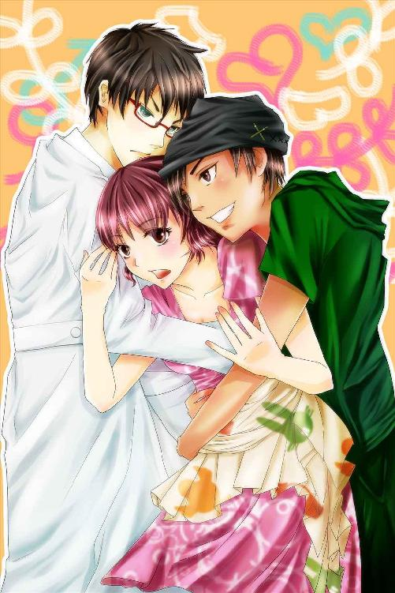
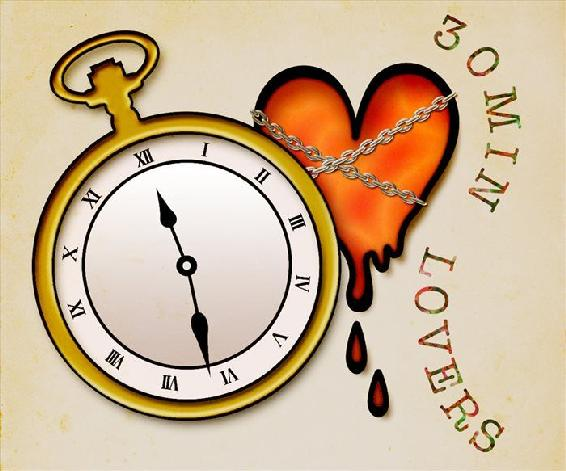

| 三つ巴！？ (30MIN LOVERS) | |
| 川島千夜 | |

三つ巴!?
川島千夜
波の音が私達を包む。
磯の香りに、ほんの少しだけペンキの匂いを混じらせた空気の中、いつもと変わらぬ、まぶしい笑顔で微笑むソラ先輩に、私は思い切って息継ぎもせずに一気に言い切った。
「ソラ先輩。好きですっ!! わ......私と付き合ってくださいっ!!」
酸欠による軽いめまいを覚えつつも、私は平常を装ってソラ先輩の返事を待つことにした。
「..................」
「..................」
心を締め付けるような沈黙が続く......。
「あー、えっと......」
ようやく言葉を見つけたソラ先輩が、まっすぐに私を見つめ返した。
「ごめん。今好きな『男』がいるんだ」
彼の、まっすぐな、瞳が、すごく、痛い......。
今を遡ること約一ヶ月前。
私はかねてから希望していた東京の美大に無事入学することが決まり、都内で一人暮らしをしている兄のマンションに同居することとなった。
「うっわー。さすが東京!! こんな夜景、テレビでしか見たことないよっ」
興奮した面持ちで窓の外を眺める私に、十歳違いの兄は苦笑した。
「巴、たかだか十階からの景色で喜んでいたら、田舎から出てきたとばれるぞ」
「本当にかなりのド田舎から出てきたんだもん。今更ばれたって平気だよ」
私はベランダの窓を閉めると、足取りも軽くダイニングテーブルに座った。
「飾らない、偽らない、素直に生きる。これが私のモットーだからね」
「はいはい」
一足先に座っていた兄は、一緒に暮らしていた頃と変わらぬ落ち着きで、静かに紅茶を口に運んでいる。
「お兄ちゃんが製薬会社の研究員になって、実家を出て五年かぁ。あの時は、またこうして一緒に暮らせるなんて思わなかったなー」
「ああ......」
口数の多い方ではない兄は、昔と同じように口元に微笑を浮べて頷いただけだった。
それでも私は嬉しくなって、兄が入れてくれた、甘い紅茶を笑顔ですすった。
だって、五年前と変わらず、兄の『美田 雅』は白い肌に中性的な顔を持つ、長身で細面の......一言で言うなら、かっこいい兄のままだったから............。
それだけでも十分誇らしかったのだ。
「ホント良かった。東京で一人暮らしとか、すっごく不安だったから、お兄ちゃんが余っている部屋を使っていいって言ってくれて、メチャクチャ安心したよー」
「わざわざ東京の美大なんか受けるから、上京するハメになったんだろ。地元の大学でもよかっただろうに............」
そう言いつつも、兄はどこか嬉しげだ。
いつも表情が変わらないと言われている兄だが、私には微かな口角の上がり具合や、目元の動きで、彼の喜怒哀楽はよくわかるのだ。
「地元の大学で美大なんてあるわけないじゃない。お兄ちゃんこそ、わざわざこんな都心で、一人暮らしなのに２ＬＤＫのマンション借りるなんて、贅沢じゃない？」
「そのお陰で、お前の大学生活が少しは快適になったんだ。ありがたく思いなさい」
「もちろん、ありがたく思ってるよ！」
私は椅子からピョン......と飛び上がると、兄に向けて勢いよく頭を下げた。
「今日から大学卒業までの四年間、『美田 雅』の妹こと、『美田 巴』を、よろしくお願いしまーす!!」
ふざけきった挨拶をしながら、私はどこかの国の大統領のように、握手を求めて手を差し出した。
兄はキョトンとして私を見ていたが、やがて口元に小さく笑みを浮べると、「お前も変わらないな......」と呟き、私の短い髪をグリグリと撫でた。
これが、私が東京で過ごす、初めの一日目だった......。
「巴さん、お待たせ致しましたわ」
サークル棟の片隅で、『新城 マユカ』は私に手を振りながら近づいてきた。
ヒラヒラの、フリルが沢山ついたワンピースを着た彼女は、さながら歩くダンヴェール嬢の肖像だ。
「もう、大学って本当に広いですわね。道に迷ってしまって、困ってしまいましたわ」
おっとりと言うマユカちゃんとは正反対に、原宿で買ってきた原色バリバリのワンピースを着た私は、元気にマユカちゃんに返答をした。
「どうせ、そこら辺の男の子に道を聞いて、ここまで送ってきてもらったんでしょ。マユカちゃん可愛いから、もう学年中の噂になってるよー」
「うふふ、でも、私お若い殿方には興味がございませんの」
「ああ、そう言えば......マユカちゃんって、年上の既婚者が好きなんだっけ......」
クリクリのロングヘアーを揺らして笑う、どこかの金持ち令嬢の彼女が、なぜここまで強烈な不倫願望を持っているのかは知らないが、私は深く追求することはやめて、サークルの新歓コンパに参加するべく、サークル棟に足を踏み入れた。
新しい校舎とは違い、オンボロな廊下がギシリと軋み、どこか懐かしい感覚を呼び起こす。
「巴さんは、どのようなタイプの殿方がお好きなんですの？」
軋む廊下を進みつつ、隣を歩くマユカちゃんが話しかけてくる。
「うーん。元気で、夢に向かって一直線!! って人がタイプかなぁ。なんだかそういう人って、キラキラしててかっこよく見えるの」
「まぁ。巴さんもお元気ですのに、パートナーの方までお元気でしたら、大変なことになりそうですわね」
「そ......そうかな......」
「ええ、巴さんって、ほら、少々芸術家肌の変人さんじゃないですか。変な柄のワンピースを着てますし。時々奇声を上げて、突然ニヤニヤしたりなさいますし......」
「そ、それは、ちょっと脳内の妄想が爆発しちゃった時で......って、芸術家肌の変人って、もはや嫌味なんだけどっ!?」
「ああ、ほら、そろそろ着きますわよ、ペンキ絵サークルのお部屋に......」
私は釈然としない物を感じたが、ペンキの匂いが嫌いだと言っていたわりに、私に付き合ってペンキ絵サークルに入ってくれたマユカちゃんに感謝を示し、口を閉ざしてサークルの扉を開いた。
「失礼します！ 今日からお世話になります、一年の『美田 巴』ですっ」
「『新城 マユカ』と申します～」
唾を飛ばす勢いで挨拶をした私の前には、がらんとした教室に５人の男女がポツンポツン......と座っている光景が広がっていた。
「..................」
「......あらずいぶんとうら寂しいことで......」
「マユカちゃん、お口チャックね」
入り口で固まっている私達を見て、一人の女の先輩が立ち上がった。
「ようこそ、ペンキ絵サークルへっ!! あたしはルミ!! よろしくねっ!!」
「声でかっ!?」
爆音で私達を出迎えたルミ先輩は、転がっていたペンキの空き缶を蹴り飛ばし、まるで、もう二度と逃がさないと言わんばかりに私達の手を掴んだ。
「いやー、よく来てくれたわね！ ここ、美大のくせに、デッサンとかイラストのサークルよりも、テニスサークルとかの方が人気あってさぁ、部員がなかなか集まらなかったのよねー。今年は２名も来てくれたわー。もうコレで、今年の幸運は使い果たしたも同然ねっ!!」
「は......はぁ......」
「まあ、いいから座って、座って」
引き気味の私達に椅子を勧める先輩達。
「歓迎用の予算も少ないからさ、心ばかりの歓迎会だけど」
そう言って先輩達は缶ビールを開けた。
「おいおい、自分らだけ飲み物とってないで、新人にも渡してあげろよ」
慌てて私達にレッドブルを渡してくれたのは、色の浅黒い、男らしい顔をした一つ上の先輩だった。
「気が利かない奴らばっかで、悪いな」
「あ......ありがとうございます」
その先輩は私達に飲み物を渡す前に、手早く缶のプルトップを上げて、ふたを開けてくれた。
彼のそんな気遣いが嬉しく、私は笑顔でそのレッドブルを受け取った。
「オレ、『小宮山 宇宙』ってんだ。よろしくな」
「そら......先輩？」
「ああ、宇宙って書いてソラって言うんだ。恥ずかしいくらい壮大な名前だよな。普段、メールとかでオレの名前書くときは、カタカナとかでいいからな」
「いえ、とても良い名前だと思いますよ」
「あはは、ありがとう」
そう言って照れたように笑うと、ソラ先輩は私の髪をくしゃくしゃと撫でた。
「お前も、その変な柄のワンピース、芸術家気取りっぽくていいと思うぜ」
「えっ？ 芸術家気取りっ!?」
「最近てさ、美大生ともあろう奴らまで、気取って個性のない服装ばっかしている気がするんだよな。そういうのって、どうかと思ってたからさ、こういうすっぱ抜けた服装の奴が着てくれてうれしいよ」
「すっぱ抜け......。あ......ありがとう......ございます......」
ものすごく釈然としないままに、私はお礼の言葉を述べた。
「褒められて良かったですわね、巴さん」
「............たまにマユカちゃんの発言が気になるのは、どうしてなんだろう......」
クスクスと笑うマユカちゃんに、早速、他の男の先輩が話しかけてくる。
「ねね、二人はどうして知り合いになったの？ 高校の時からのお友達？」
「いえ、受験の時に落ちた消しゴムを拾ってくださったのが、巴さんなんです。彼女ったら、跳ねてゴミ箱に入ってしまった消しゴムを拾うために、講堂のゴミ箱に頭から突っ込んでいってくださったんですのよ」
「後半部分の説明はいらないからっ！」
「その時から、すごく面白そうな方だと思いまして、お友達になったのです」
「ハイエナに狙われた獲物の気分しかしないんだけど......」
私達の話を聞いたルミ先輩が、豪快に笑う。
「あはは、いいじゃん。二人とも面白そうだし、もう、コレでペンキ絵サークルは安泰だね」
「でも、どうしてここに入ることにしたんだ？」
ビールを飲んで、少し頬を赤くしたソラ先輩が私の目を見て尋ねる。
「部長のオレが言うのもなんだけどよ、ペンキ絵って、グラフィティと違って、そこまで人気でもねえしさ、新入生には入りにくいサークルだと思っていたんだけど......」
私は、なんだか彼の視線にドキドキしてしまい、目をそらして口を開いた。
「実家が......銭湯やってて。それで、銭湯の壁に描かれていたペンキ絵を、自分で描けたら、少しは役に立つかな......なんて思って......あはは、ちょっと勝手な理由ですよね......すみません」
「いや......いいじゃんそれっ！」
「へ？」
「実家が銭湯とかさ！ 描きたい放題じゃん!!」
「うん......そうですね」
「え......!? 描きたい放題にしていいんですの？」
「だってもう、ボロボロの銭湯だし......」
「くー、そういうレトロ感も、たまらないよな～」
ソラ先輩は目をキラキラと輝かせて、天井を見上げた。
「オレさ、いつか超でっかいキャンパスに、オレの頭ん中の世界を描けるだけ描いていきたいって夢があってさ、そのくらいの大画面の絵を描くにはペンキじゃないとだめっていうか、ペンキ絵の魅力が――」
「わぁ......出ましたわね。夢語り人......」
「うん、うん、それでっ？」
「巴さんったら......真剣に聞いてますし......」
隣でブツブツと何か言っているマユカちゃんを無視し、私はソラ先輩の話に聞き入っていた。
「――ってワケでさ。いつか、巴ちゃんとこの壁に絵描かせてよ!!」
「ちょっとソラ～。初対面の後輩に馴れ馴れしいぞ～」
ソラ先輩が長い話を終えるのを待って、ルミ先輩が苦笑を浮べた。
他の先輩達も、今まで何度もソラ先輩の話を聞いてきたのか、うんざりしたように肩をすくめている。
私は、太目の眉の下に爽やかな笑顔を作るソラ先輩の顔を見返して、大きく口を開けて言った。
「はい!! よろこんでっ!!」
「えーっ!? ちょっと、美田さん乗り気だしっ!!」
「あらあら、巴さんったら............」
驚いて腰を浮かす先輩達、口元を隠して私とソラ先輩を交互に見比べているマユカちゃん。
私はそんな周囲の反応をものともせず、がくがくと頭を揺らして頷いていた。
「私、ぜひ、ソラ先輩の夢を応援したいですっ!!」
「ありがとう！ オレ、こんな良い後輩に出会えて嬉しいよ!!」
心からの喜びを顔に出して、私の頭をグリグリと撫でてくれるソラ先輩。
私は、彼の笑顔でご飯３杯は食べられそうなほどの幸せを感じた。
「......ペンキ絵サークルに、変人が増えていく......」
ルミ先輩は頭を抱えだした。
呆れた様子の他の先輩も、話題を変えるべくマユカちゃんに話を振っている。
「ところで、新城さんもペンキ絵が好きなの？」
「いえ、私は水彩画が好きですの。ペンキは匂いが少々苦手で......」
「ええっ!? じゃ、どうして、ここのサークルに？」
みんなの視線が集中する中、マユカちゃんはおっとりとした微笑を浮かべ、小首を傾げた。
「巴さんが入るとおっしゃったので......」
彼女の言葉に、言葉を返す者は誰もいなかったのだった......。
「マジでさ、巴ちゃんとマユカちゃんって、どんな関係なわけー？」
酔ってしつこく絡む男の先輩の手を、私はうっとうしげに払った。
「単なる友達ですよー」
「ええ。しかも、大学に入ってからの、浅い関係の友人ですわ」
「......マユカちゃん............」
「？」
時刻は夜９時。
貧乏サークルの新歓コンパが終わるには、ちょうど良い時間だった。
私を含むサークルのみんなは、真っ暗になった校舎を抜け、校門に向かってゆっくりと歩いていった。
「マユカちゃん、結構遅くなっちゃったけど、門限とかは大丈夫なの？」
「ご心配なく。夕方６時を過ぎると、門の前にお迎えの車が来る手はずになっておりますので......」
「あ......そう............」
彼女の言葉に、ソラ先輩が私を肘で突っつく。
「あのさ......彼女どれほどのお金持ちなんだ？」
「さ......さぁ......。お互いそこまで話すほどの仲では......」
「そうか。ま、面白い奴が来てくれてよかったけどなっ」
楽しげに笑いながら、私の頭をグリグリし続けるソラ先輩。
私はもう、いっそのこと、この頭を先輩に差し上げて、一生グリグリされ続けてもいいかと思うほどの心地よさを感じていた。
「あ、あれって、迎えの車じゃない？」
ルミ先輩が、校門の向こうに立つ人物に向かって指を指した。
マユカちゃんがその人物をじっと見つめ、フルフルと首を振った。
「私の運転手ではございませんわ」
「えっ？ じゃあ、他の生徒を迎えに来た人かな？」
「意外にこの学校って、お金持ちが多いんでしょうか――」
そこまで言った私は、ハッとして言葉を飲み込んだ。
迎えに来ていた人物は、校内から漏れる光がかろうじて届く闇の中で本を読んでいる、白衣を着た私の兄――『美田 雅』だったのだ。
「おおおおおお、お兄ちゃんっ!?」
「ええっ!? 美田さんのお兄さんっ？」
「あらまぁ......お初ですわ」
「マジか......似てないな......」
「妹がミルクを大量に飲んだ子猫なら、兄は神秘の森に生きる白狐みたいだな」
「その例えはどうかと思うが......同感」
口々に騒ぐみんなの声が届いたのか、兄は顔を上げて私を見た。
「......遅いから、迎えに来たぞ」
兄は、私以外の他人と接するとき独特の、低いトーンの声を出した。
「あ、あの、ペンキ絵サークルの新歓会で――」
「大学生にもなれば、帰宅が遅くなることくらいは分かる。だから、８時を過ぎるようであれば、俺が迎えに行くと言っていたはずだぞ。お前は今朝話したことをすぐに忘れる......。」
「８時って......今９時過ぎだけど、もしかして１時間もここで待ってたのっ!?」
「..................」
静かに本を閉じる兄。
彼は、少しだけ肌寒い風に黒く短い髪をさらし、サークルのみんなに軽く頭を下げた。
「『美田 巴』の兄です。妹がお世話になります......」
兄の独特の冷たい雰囲気に圧され、先輩達が固まっている......。
「私......、巴さんの友人の『新城 マユカ』と申します。以後お見知りおきを......」
唯一、場慣れしたマユカちゃんだけが、ふわりと頭を下げてくれた。
「..................」
兄はマユカちゃんにチラリと目線を送ると、私の肩に手を置いた。
首筋に触れた彼の指先は冷たく、ずっとこの門の前で私を待っていてくれたことを示していた。
「さ、帰るぞ」
「え、あ、うん......」
兄に押し込まれるようにして車に乗った私は、呆然と見送るみんなに手を振った。
「それじゃ、また明日――」
「お、おうっ......！ 気をつけてなっ」
妙に赤い顔をして手を振るソラ先輩と、いつも通りの腹黒笑顔で手を振るマユカちゃんを残し、兄は車を走らせた。
「..................」
無言で運転をする兄。
私は兄の端整な横顔をチラリと見ながら、ボソボソと声を出した。
「別に子供じゃないんだし、迎えに来なくても......」
「......まだギリギリ十代の、女子供だ。夜道は危ないだろ」
「だからって、過保護だよー」
「俺の家に住んでいるんだから、俺の保護下に居るようなものだろ？ だったら大人しく俺に保護されていなさい」
「うー......」
口喧嘩で兄に勝ったためしなんてない......というか、もはや喧嘩にすらなったことのない私は、諦めて頬杖をつき外を眺めた。
「......俺の車以外にもう一台、ずいぶんと高そうな車が止まっていたが、それはお前の友達の送迎車か？」
「ああ、マユカちゃんのこと？ うん、そうだよ。よくわからないけど、彼女、どこかのお嬢様みたい」
「お前の友達にしては常識をわきまえた......良い友達だな。大切にしなさい」
「言われなくても、友達だもん、大切にするよー」
「そうか......」
本気で保護者のような口ぶりの兄に、さすがに腹が立ってきて、私はふてくされて口を閉ざした。
そんな私の気持ちを知ってか知らずか、兄は機嫌良さそうに口を開く。
「ところで巴。そんな奇怪な柄のワンピース、どこで売っているんだ？」
以後、私はマンションにつくまで、一切兄と口をきくことはなかった。
大学生活にも慣れた五月のゴールデンウィーク。
「ちょっとー。美田さん、狭い車内で梅干し食べないでよ～。匂いが車内に充満する～」
「でも、これが一番車酔いに効くんですよ？ ルミ先輩も食べますか？」
「ばあちゃんの知恵袋を披露された気分だわ......」
私の後ろに座っていたルミ先輩は、白目を向いて座席の背もたれに身を任せた。
今、私を含むペンキ絵サークルのメンバーは、レクレーションという名の下の、小旅行に出ているところなのだ。
「いやーすみませんね、運転までお任せしてしまって」
ワゴンの助手席に座るソラ先輩は白い歯をこぼして、運転手である兄にお礼を言った。
「ちょうど、地方の研究所に出張しなければいけない用事があったから、ついでだ。気にしなくて良い」
「はは、なんか薬の研究とかって、カッコイイっすねー」
表情一つ変えずに運転している兄に、ソラ先輩はまるであこがれの先輩を見つめる女子高生のような目線を送っている。
「ホント気にしなくて良いんですよ、ソラ先輩。大体このワゴンだって、マユカちゃんの家から借りたものですし」
「お気になさらずに。どうせ、余っていた車ですので」
「余っていた......ってすげーな」
後ろで先輩達が苦笑を浮べている。
「それに、ソラ先輩だって民宿の予約とか、色々と手配してくれたじゃないですか。みんな対等ですよっ!!」
「そういや、巴ちゃんはなんかしたっけ？」
「えっ？ あの......私はえっと......」
「お兄様をレンタルしていただいた......と思えば」
「マユカちゃーん......」
「あはははは。確かに、雅さんのレンタルはかなりの貢献だよな」
クスクスと笑うマユカちゃんと、爽やかな笑い声を上げるソラ先輩。
初めてのサークル旅行は、これだけでも成功したと思えるほど、幸先のよいスタートだった。
本当なら、ソラ先輩の隣に座りたかったくらいなのだが、ナビは助手席に必要と、兄が指定した席順で座るハメになってしまい、私のヤキモキする気持ちがどんどんと高まっていく。
「でもさ、今回の小旅行はレクレーションもあるけど、あたし達のペンキ絵の実力を見せる場でもあるんだよ！」
ルミ先輩が後ろから声を張り上げる。
「そうそう、地元のクソッ寂しい防波堤に、オレ達の絵を描いて欲しいだなんて、町長から直々に依頼されたんだぜ。すげーワクワクするよな!!」
満面の笑みのソラ先輩を見ていると、私まで嬉しくなってくる。
「ああ......、私はペンキの匂いを嗅ぐと頭がクラクラしてしまいますので、遠くからみなさんを応援しておりますわね」
「マユカちゃんは本当に、何のためにペンキ絵サークルに入ったのやら......」
ジト目で見つめる私から顔を逸らし、マユカちゃんは話を変えた。
「そういえば、巴さんのお兄様は、ずいぶんとおしゃれなメガネをなさっていますわね」
マユカちゃんは兄のメガネ――赤いフレームのメガネを指差して言った。
「......これか......」
兄はどことなく嬉しそうに口元を緩めた。
「あー、それ、私が選んだんだ」
「あら、そうですの？」
「ああ、俺が実家を出る時に、巴泣きながら選んでくれたものだ」
「泣きながらですのっ!?」
「ああ、家族が離れ離れになるのは嫌だってな」
「やだなー。そんな昔の話ー」
照れて、手をパタパタとさせる私向かってに、兄はミラー越しに小さく微笑んだ。
「あらまぁ、ご自分もご実家を出たくせに......」
「もちろん、家を出る時は超泣いたよ。でも、ほら、東京にはお兄ちゃんもいたことだし、離れ離れになる寂しさよりも、新生活のワクワク感が上回ったというか......」
「ふふふ、巴さんらしいですわ」
マユカちゃんはミラー越しに兄を見て言った。
「それにしても、そのメガネ。巴さんのチョイスにしては、まともなものでよかったですわね」
「どういう意味よっ！」
「だって、巴さんのワンピースっていつも............」
「そ、そんなに私の服装って変っ!?」
叫ぶ私に、マユカちゃんはクスクスと笑い続けて返答してくれない。
「巴らしくて......似合っているとは思うがな......」
「お兄ちゃん............」
運転席の兄の言葉に、私の頬が赤くなる。
「いやーでも、雅さんって、メガネの似合う知的な研究者って感じで、カッコイイっすよね!!」
兄の視線をさえぎるかのように、ソラ先輩が大きな声を出す。
当の本人も、短く切った茶色い髪に似合うダボっとした服を着こなし、キャップを被ったその格好は、どこかの雑誌の切抜きのようで、どこからどう見てもカッコイイと思う。
そんな私の気持ちに気がつくわけも無く、一方的に兄に話し続けるソラ先輩を乗せ、旅路は進んでいったのだった。
「雅さん、ありがとうございましたっ!!」
『ありがとうございました』
宿泊予定の民宿の前で、兄に頭を下げる一同。
「では、俺は２日後にまた迎えに来る。巴、くれぐれも羽目を外し過ぎないようにな」
「おにいちゃん、心配し過ぎだよー」
「お前は少々アレなところがあるからな......」
「アレってなにーっ!?」
「......新城さん、くれぐれも妹をよろしく頼む」
「お任せくださいませ」
「ちょっとーっ!?」
一方的に進められていく話に、私は思わず突っ込みを入れる。
と――その時、兄が私の耳元に口を寄せた。
「本当に......羽目を外すなよ？」
「......え............」
ボソリといった言葉に、一瞬熱を感じたような気がしてしまい、私は動きを止めて兄を見上げた。
二人きりの時とは違う、よそ行きの、冷たい表情で兄は佇んでいる......。
「雅さんも、お気をつけて行ってきて下さい!!」
ソラ先輩は兄に握手を求めるかのように手を差し出して、大きな声を出した。
「............それでは、失礼する」
「あ............」
ソラ先輩の手には目もくれず、兄はくるりと背を向けると、さっさと車に乗り込んでしまった。
「あーごめんね。お兄ちゃん、昔から、あんまり他人に愛想がなくて......」
慌ててフォローを入れた私だったが、ソラ先輩は目を輝かせ兄の運転する車を見送っていた。
「............雅さん......めっちゃクールだな......」
「......ソラ......先輩......？」
「よーっし、堤防の下見もしないといけないし、さっさと荷物置きに行こうぜ!!」
ソラ先輩はポン......と私の肩に手を置くと、荷物を担いで民宿へと入っていってしまった。
「......あ............えっとー」
呆然とその姿を見送っていた私の後ろで、マユカちゃんが例のごとく小首を傾げて小さな口を開いた。
「波乱の予感ですわね............」
「ぜぇったい、カッコイイって!!」
口元にビールの泡をつけつつ、ルミ先輩は絶叫した。
「せ、先輩、声大きいですよっ。ここの民宿、壁薄いんですから......」
私は八畳ほどの部屋の片隅で、慌ててルミ先輩の口を塞いだ。
明日からの作業の下準備が終わった私達は、食事を食べてお風呂に入れば特にやることもなく、通例通り、女三人集まっての寝る前の雑談......というか、猥談に花を咲かせていたのだ。
「声も大きくなっちゃうわよ！ 高長身、高学歴、高収入にしてあの容姿。さらには、あのミステリアスな雰囲気!! ソラじゃなくても興奮しちゃうってー」
「そ......そうですか......？」
「美田さんは妹だから、麻痺してるかもしれないけど、あたしが妹だったら、あの兄を絶対、襲うね。薬持ってでも犯すね」
「ルミ先輩、それ犯罪......」
「あの兄のためなら、犯罪なんてゴミくずのようなものよ。もー、あんな美麗な兄を側に置いてなにもしないなんて......アンタ芸術家として失格よ！ ホント、似てない兄妹だねっ......」
「それは私も思っておりましたわ。お兄様と巴さんって、雰囲気もそうなんですが、性格も、ご容姿も全く似てらっしゃらないというか......月とスッポンと言うか、掃き溜めに鶴というか......」
お茶をすすりながら言うマユカちゃんをジト目で見つつ、私はため息をついた。
「どっちがスッポンで掃き溜めだかは聞かないとして......。確かにそうなの。小さいときから似てない兄妹って言われてたんだー。でも、十歳も歳が離れているし、男と女だし、ま、こんなもんなんじゃない？」
「はは、意外と橋の下で拾われてきたりしててね。アンタが」
「私っ!? 私は......両親とそっくりだよ？ むしろお兄ちゃんのほうが、田舎のボロ銭湯の息子としては異例なほど出来た子供だったし......」
「トンビが鷹を産んだ......というところでしょうか」
「否定はしないけど、気に障る言い方ねー」
私とマユカちゃんの会話を聞き、ケラケラと笑うルミ先輩。
「まあまあ、新城さんの口が悪いのは今に始まったことじゃないしさ。ってか、新城さんも美田さんのお兄さん、カッコイイと思わないの？ 狙っちゃえば？ 新城さんならゲットできるっしょ。そしたらたまに貸してよ」
「狙うって......貸すって......」
呆れている私の前で、マユカちゃんは静かに首を振った。
「私、既婚者の男性じゃないとトキメかないんですの」
「..................」
「出来れば......そうですね、四十代半ばのちょっとくたびれた中間管理職、お子さんが反抗期で、奥様ともマンネリ気味の、仕事だけが生きがいの――」
「うん、よくわかった。よくわかったから。マユカちゃんの未来に幸あれ」
「あら、巴さんったら、私の理想をバカにしているようですわね。でしたら、ご自分の理想はどうなんですの？」
「え......あ......わ......私は......」
「そうだよねー、確か前、元気な奴が好きだとか言っていたけどさー、元気な奴が良ければソラでもいいわけだしさー」
「そそそそ、ソラ先輩っ!?」
うろたえる私に、ルミ先輩は怪訝そうな目を向ける。
正直、怖い............。
「......なに慌ててんのよアンタ......」
「べ、別に慌ててなんか......」
「......新城さん......もしかして、美田さんって......？」
「ええ、巴さんは小宮山先輩がお好きなようですわ」
「あっさり裏切るー!?」
私はシレっとした様子でお茶を飲むマユカちゃんに、涙目を向けた。
だが、酔ったルミ先輩は私の襟元を掴むと自分の顔の方へ、グリっと私の顔を無理やり向けさせた。
「せ、先輩......目......据わってますよ......」
「ふふふ、黙っているなんて水臭いじゃない。あんな美麗な兄を置いて、ドラクロワみたいなソラが好きだなんて、スッゲー面白いじゃない」
「ド......ドラクロワ？」
「『民衆を率いる自由の女神』を描いた有名な画家ですわ。......美大生が知らないというのは、由々しき問題ですわよ」
「あ......会ったことないし......」
「十九世紀に生きていた巨匠にあったと言うなら、私は今すぐ巴さんを家の関連会社の研究所に送りますわよ」
呆れるマユカちゃんを無視して、ルミ先輩は私にお酒臭い息を吹きかけ続けている。
「教えなさいよ、あのソラのどこがどう良いのか。そして、いつから好きになったのかをっ!!」
「一目惚れらしいですわ。夢を追って、サバサバとしていて、男らしい。まぁ、巴さんのお兄様とは真逆のタイプですからね。ツボに直撃だったみたいですわ」
「ほうほう」
「先日も、小宮山先輩がリップをお使いになっているところを目撃して、『ああ......あのリップになりたい』と、臆面もなく呟いて――」
「マユカちゃん、お願い、もう口閉じて、土下座するからお願いっ!!」
「ふふふふふ......人の恋路は楽しいものですわね」
「ちょっと、先輩に色々聞かせなさいよー。アイツとこの先どうなりたいのかをーふふふふ......」
「あうあうあうあうあうー......」
その晩、私は本当に泣いて土下座するまで、マユカちゃんとルミ先輩に、ソラ先輩へ対する淡い恋心を突っつきまわされたのだった......。
「おーっし、やるぞーっ!!」
潮風に包まれて、ソラ先輩は声高く叫んだ。
「おー......」
ペンキと刷毛を手に持ったみんなは、力なく声を上げる。
「......なんだよ、元気ないぞお前らー」
古びた防波堤をペチペチと叩きながら、ソラ先輩は文句を言った。
「いやだって......昨日、散々あれだけ飲んで、一晩中語り明かす......というか、ソラの語りを聞かされて、俺ら超寝不足なんだけど......」
ボソボソと声を出す男の先輩たちは、白目を剥いたままだ。
「あたしも、昨日はちょっとはっちゃけすぎたわ......」
ルミ先輩も、どこぞのホラー映画の女優のごとく、長い髪を前に垂らしたまま頭をゆらゆらと動かしている。
「お前らっ、やる気無さ過ぎだぞ！ せっかく俺たちの絵をここに残すことが出来るんだから、気合入れてやれよー」
「......そうですよっ！ がんばりましょうっ!!」
勢い込んで頷いた私に、ソラ先輩はまぶしいほどの笑顔を見せてくれる。
「お、巴ちゃんは元気だな。やる気があって嬉しいぜ！」
「はいっ！ 私、がんばりますからーっ!!」
ガッツポーズを見せる私の後ろで、先輩達の冷めた声がボソボソと聞こえる。
「あの二人お似合いだし、ちょうどいいかもねー」
「なんだよ、もうそんな関係なのかよ」
「とうとう我サークルに春が来たか......」
「いやいや、変なワンピース着ている子の一方的な......」
「ペンキ、臭いですわぁ......」
文句だか、愚痴だか、野次だかを、ボソボソとつぶやきながら散っていくみんな。私はその後ろ姿を、苦々しく思いながら見送った。
「なんだアイツら、ホントにやる気ねえな」
「はは、ちょっと疲れちゃっただけですよ。でも大丈夫！ 私がみんなの五倍も描きますからっ!!」
「おっしゃ！ じゃ、計画通り、区画わけして描いていくぞーっ！」
嬉々として絵を描き始めるソラ先輩。
その姿を惚れ惚れと見ていた私だったが、やがて我に返ると、私も灰色のコンクリートの塊に、カラフルな色を乗せていった。
寂れ、沈んでいた防波堤が少しずつ色を含み、生き返っていく。
私は賑やかになっていく防波堤の様子が嬉しくなり、ソラ先輩のすぐ隣の区画で、鼻歌を歌いながら絵を描いていった。
「巴ちゃん、上手いな。初めてだと、普通キャンパスが大きすぎて絵が歪んだりするんだけど、ちゃんとバランスよく描けてるじゃん」
「ふぁいいぃっ！ ありがとうございまっす!!」
思わず奇声を上げて喜ぶ私。
心底、くじ引きで決めたソラ先輩の隣の区画を、マユカちゃんに土下座して交換してもらってよかったと思った。
赤いペンキを頬につけて、一生懸命絵を描いていた先輩は、口元に笑みを浮べながら、誰にともなく話をし出す。
「ペンキ絵ってさ、スプレーで、大急ぎで描くグラフィティーとは違う面白さがあると思うんだよな」
「グラフィティーと違う？」
「ああ、グラフィティーも確かに完成されたアートだとは思うけどさ、ほら、偶然性が高いもんじゃん。でもこうやって、人に頼まれて、皆が喜ぶような絵を描ける......しかも堂々とこんなに大きくだぜ？ こんなことって、ペンキ絵じゃないと出来ないと思うんだ」
「ソラ先輩......」
手を止めて彼の横顔を見つめる私に、ソラ先輩は満面の笑みを向けた。
「俺、みんなとこの気持ちを分かち合えてさ、スッゲー幸せ」
「........................」
私は、完全に彼に恋をしてしまった。
夜、私達はペンキだらけの身体をお風呂で洗い、小さな民宿の一部屋で、再びルミ先輩の晩酌に付き合っていた。
窓から、私達が半分まで描いた防波堤のペンキ絵が見える。
「............あぁ......ソラ先輩の描いた絵になりたい......。いや、いっそ彼のペンキでもいい......」
「............巴さん？」
怪訝な顔で私を見つめるマユカちゃんに、私は勢い込んで言った。
「だって、だって、彼の絵になれば、彼に一生愛されるんだよ！ あんな思い入れを込めて、描かれた絵になったら私......はぁ......」
「自分の描いた絵に恋をする話は良くあるけど、自分から好きな人の絵になりたいってほざく、アホの話は初めて聞いたわー」
「ルミ先輩！ 最近口が悪いですよ。マユカちゃんがうつりましたね？」
「あら、失礼ですわね」
呆れたように顔を見合わせる二人は放っておいて、私は波音を運ぶ風に吹かれながら、窓のサッシに顎を乗せた。
「決めた、私明日、ソラ先輩に告白する」
「ブッ............っ！」
「うわっ!? 新城さんがお茶を吹くなんて初めて見た!!」
「失礼......少々驚いてしまったもので......」
マユカちゃんは口元を丁寧にふき取ると、改めて私を見た。
「えっと......巴さん。告白とは......『自分のファッションセンスが奇抜であること』や『時たま白昼夢をみること』などを暴露する......という意味合いでの告白ではなく......？」
「そんなこと告白してどうするんのよ！ ってか、さりげに失礼っ」
私はガッとマユカちゃんの両肩を掴むと、その目を覗き込んだ。
「私は、明日、ソラ先輩に、自分の気持ちを告白するのっ!!」
「......巴さん、目が血走っていて怖いですわ......」
引き気味のマユカちゃんの肩を離すと、私は一人静かに天井に向かってガッツポーズをとった。
「まぁ、いいんじゃないのー？ くもの巣に向かってガッツポーズをとる美田さんと、脳みそ宇宙のペンキ野郎なら、お似合いカップルだと思うしー」
「ですが......」
気だるげに言ったルミ先輩に、マユカちゃんは眉をひそめる。
「時期尚早だと思いますわ......」
「え、なにそれ、じきしょい......？」
「......時期尚早......。まだ早いってこと。つまり、新城のお嬢様は、まだ告白しない方がいいんじゃないかなって言っているの」
「うん！ 大丈夫、今は告白しないからっ!! 明日......明日、防波堤の絵が完成したら、告白するっ!! それまで待つよっ」
「まさに光陰矢のごとしを地で行くスピードですわね......」
「潮風に吹かれる中、私の気持ちに気がついたソラ先輩は私を抱きしめ、『巴ちゃん......』『巴って呼んで下さい』『巴......』二人の顔は近づき............きゃーっ!!」
「..................本気でさぁ、あのお兄さんとコイツ、血つながってなさそうだよね」
「......真実は小説よりも奇なりとは言いますからねぇ......あ、茶柱......」
布団を頭から被り悶える私と、私を放置するルミ先輩とマユカちゃんのおしゃべりは、深夜過ぎまで続いたのだった。
青い空。
青い海。
その青と青の間に、カラフルな色で彩られた防波堤が一つのフレームとして納まっていた。
「............できたー!!」
ペンキだらけの手を掲げ、ソラ先輩は声を張り上げた。
「キレイ......っ」
私は思わず感動して涙ぐみ、さすがの先輩達も嬉しげに拍手をする。
「いやー、意外に描けるもんだねー。結構な大きさだったから、２日じゃ間に合わないかと思っちゃったよ」
男の先輩達が汗をかいたまま肩を組み、笑っている。
ルミ先輩も私達と、その描かれた防波堤の写真を撮りながら、ウンウンと頷く。
「ま、大して観光客も来ないようなところだけどさ、いい思い出にはなったよね」
「ですが、この技術はお金になりそうですわねぇ」
「おいおい、そんな冷めるようなこと言うなよ。俺たちの処女作ができたんだぜ？ もっと、素直に喜べよ」
「ですね!!」
私は力強くハケを握って頷いた。
隣に立つソラ先輩が、私と目を合わせて微笑む。
「お疲れ様、巴ちゃん」
「先輩............」
「初めてのことなのに、こんなにがんばって描いてくれて嬉しいよ。巴ちゃん、ホント絵は上手いんだな」
その、彼の爽やかな笑顔と嬉しい言葉に、私の気持ちは完全に抑えきれなくなってしまった。
「......あの、ソラ先輩ちょっといいですかっ!?」
「んあっ？」
私はソラ先輩の大きな背中を押して、防波堤の端へと向かった。
「あらら......巴さんったら......」
「美田の奴どうしたんだよ？」
「はいはーい。じゃ、そこら辺に転がっている空き缶片付けといて。あたしはクライアントの町長さんに挨拶してくるからー」
ルミ先輩のフォローに感謝しつつ、私は人気のない浜辺でソラ先輩と二人っきりになることが出来た。
「どうしたんだよ、巴ちゃん？」
首を傾げるソラ先輩。その無邪気な表情に、私の胸から心臓が飛び出しそうになる。
「えっと、あの......っ。わ......わたし、ソラ先輩に言いたいことがあって......」
「？」
波の音が私達を包む。
磯の香りに、ほんの少しだけペンキの匂いを混じらせた空気の中、いつもと変わらぬ、まぶしい笑顔で微笑むソラ先輩に、私は思い切って息継ぎもせずに一気に言い切った。
「ソラ先輩。好きですっ!! わ......私と付き合ってくださいっ!!」
酸欠による軽いめまいを覚えつつも、私は平常を装ってソラ先輩の返事を待つことにした。
「..................」
「..................」
心を締め付けるような沈黙が続く......。
「あー、えっと......」
ようやく言葉を見つけたソラ先輩が、まっすぐに私を見つめ返した。
「ごめん。今好きな『男』がいるんだ」
彼の、まっすぐな、瞳が、すごく、痛い......。
でも、私は答えをくれた先輩に何か言わなくては............。
私はしどろもどろになりながらも、必死で言葉を探した。
「そっか......好きな人がいるんですか............あれ？ 好きな『男』？ ......男......？ 男っ!?」
「ああ、一目惚れって奴かな......。へへ......」
「へへ......って、照れ笑い浮べている場合じゃないですよっ！ せ、先輩、メンズスキーだったんですかっ!?」
「メンズスキーって新しい造語だなオイ。............まぁ、恋愛対象が男か......と言われたら違うな」
「はぁぁっ？ でも、今、好きな『男』がいるっていったじゃないですか！」
「オレは、オレの理想の人であれば、性別なんて関係ないと思っているんだ」
「りりり理想っ!?」
「ああ、線の細い、ミステリアスな雰囲気の人がタイプでさ......」
彼の言葉に私は愕然とした。
「全く私とは正反対の............ん？ 線の細いミステリアスな雰囲気って......すっごく身近なところにいる気が......」
「ああ、そうなんだ!!」
ガシっと私の両手を掴み、ソラ先輩はキラキラとした瞳で私を覗き込んだ。
「巴ちゃんのお兄さん......雅さん！ あの人すごく知的な感じで、ミステリアスで、色が白くて線が細くて......あぁ、もう完全にツボなんだよね！」
「ツボなんだよねって、そんな爽やかに言われましても......」
呆然とする私の頭に手を乗せ、ソラ先輩は照れ笑いを浮べた。
「悪い、だから巴ちゃんの気持ちには応えられないんだ。ああ、でも雅さんの妹さんとして、そしてサークル仲間としては、オレは巴ちゃんのことは大好きだからさ、これからもよろしくな!!」
「..................」
真っ白になって立ち尽くす私から、颯爽と去っていくソラ先輩。
「これからもよろし......よろしく......？」
脳内でリピートされるソラ先輩の明るいボイス。
「あ、雅さんが迎えに来たぞ!!」
遠くの方で、兄の姿を見かけたソラ先輩がはしゃいでいる。
兄は相変わらず、真っ白な白衣を着たまま、気だるげに車から降りてきていた。
「......ものすごい色彩のワンピースを着ているはずなのだが、ずいぶんと巴が真っ白に見えるのはどういうことだ？」
潮風に乗って聞こえてきた兄の呟きが、私の心を痛めつける。
「ライバルは......兄......!?」
夕方６時。
私は日没とほぼ同時に、マンションのドアを開けた。
「お帰り、巴」
「............ただいま」
一足先に帰ってきていた兄が白衣を椅子の背にかけ、私を出迎えた。
「..................」
私はその横を無言で通り過ぎ――。
「巴、待て」
「う............」
通り過ぎようとして、失敗した。
兄は私の腕を掴み、椅子に無理やり座らせる。
彼の白い顔が、少しだけ赤くなっている。
「巴......何があった？」
「......何がって？」
「............はぁ............」
兄は私のすぐ隣に腰掛けると、その細い指に顎を乗せて私を見下ろした。
「何を隠しているんだ？」
「............何も？」
「巴、言わせてもらうが、お前は少々......頭が悪い」
「ひどっ！」
「だから、お前が何かを隠しているのはよくわかる。本来ならば、お前より早く帰ってきている俺を見て、『お兄ちゃんどうしたのっ！ 会社クビになったの!?』と、本気で騒ぐのがセオリーだったのに、今日は無言で部屋に駆け込もうとした」
「......お兄ちゃんどうしたのっ！ 会社クビになったの!?」
「研究が一段落着いただけだ」
「........................」
うつむく私に、兄のため息が降りかかる。
「......それにだ。最近お前、けったいな柄のワンピースを着なくなったじゃないか」
「それは関係ないっ!!」
「..................」
噛み付くように顔を上げた私の目を、じっと覗き込む兄。
彼の薄いグレーの瞳が、私の心を見透かすように見つめている......。
「何があった？ お前の元気がないことは本当に珍しい。さすがに心配だぞ？ 俺に話してみろ......」
兄の不器用な、それでいて優しい言葉に、私の目に涙がたまっていく。
「巴......？」
「おに......お兄ちゃんの......お兄ちゃんのせいなんだからーっ!!」
「巴っ？」
ポロポロと泣き出した私を前に、兄は困ったように眉をしかめている。
「突然泣くことはないだろう、ほら............」
兄は私の背中に手を回すと、昔からそうしてくれたように、ポンポンと優しく背中をさすってくれる。
いつもはそれで、安心して泣きやんでいた私だったが、今回は違った......。
「触らないでーっ！」
兄の手を振り払う私。
兄はショックを受けたように目を見開いた。
「お、お兄ちゃんが、そんなんだから、ソラ先輩が......お兄ちゃんに......う......うえぇぇぇっ......」
「............は？」
兄の発した『は？』は、心の底からの疑問符だったようだ。
首を傾げたまま固まる兄に、私はゴールデンウィークの小旅行の話をした。
「わた......私、ソラ先輩......ああ、ソラ先輩って、あの元気な色黒の先輩ね」
「それは分かっているから早く続きを話せ」
「うん。あの......私、ソラ先輩に告白して......。そしたら、先輩が......お兄ちゃんのことが好きだからってえぇぇぇっぅ!!」
「絶叫する前に一つ聞かせてくれ。あいつはオレが男だと理解している上で、そう言ったのか？」
「うん、自分のタイプの人なら、性別なんか関係ないって......。確かにその気持ちはわからなくないけど......」
「........................」
両手で頭を抱え込む兄。
私はそんな兄を見て、やり場のない悲しみに押されてボロボロと泣きじゃくっていた。
「あー。巴......」
頭を抱えていたはずの兄が、いつの間にか私の肩に手を回していた。
いつもかけている赤いフレームのめがねを外した兄は、どこか薄ら寒い笑みを浮かべて私の頬に触れてくる。
「お前は、脳足りんで世間知らずだ」
「ひっく......そこまで......言うことないじゃ......」
「だが、お前のそんな純粋無垢なところが良いと思っていた。だから、俺はお前が穢れないように、ずっと守ろうと思っていた」
「おに......いちゃ......？」
見慣れていたはずの兄の顔が、すごく冷たく、他人のように見える......。
私は冷たいはずなのに、異常なほど熱い兄の態度に戸惑いを感じ、彼の手を振り払おうとした。
「ちょ......、なんかお兄ちゃん変......」
「............まあ、お前の兄だとすればこんなものだろう？」
「............っ？」
兄は私の首の後ろに手を回すと、グッと私を引き寄せた。
彼の薄い唇が、私の耳触れる......。
「お前は他の男なんかに振り回されずに、俺だけを見ていればよかったんだ。それなのに......あんな男に心揺らがせるからそんな目に......」
「――――やっ!?」
低く、さざめくように呟いた兄の唇が、私の頬に触れ、小さく音を立てて離れていく。
「お、お兄ちゃんっ!? 私、妹だよっ!!」
「妹を愛して何が悪い？ お前の好きなソラという先輩だって、男のオレが好きなんだろ？」
「確かに......悪いことはない......か......？」
「お前がバカで、手間が省けて助かる......」
「ちょ......やだっ......!?」
兄は私の身体を抱き上げると、そのままドサリとリビングのソファーに私を投げ出した。
「ひゃん......っ!?」
声を上げてソファーに倒れこんだ私は、澄ました顔でネクタイを緩める兄を見上げた。
「な......何をする気なの......っ!?」
「......そこまで分からないほどバカではないだろう？」
「バカバカって言うけど、い、妹にそんなことするお兄ちゃんのほうがバー――――っ!!」
声を出し続けていた私の唇は、兄の口付けによって塞がれた。
「ふ......んんっ......」
兄の唇は何度も私のそこをなぞり、まるで飢えた子供のように私の唇を小さく吸っていく。
「ふぁ............っ」
私の肩を抑えつけたまま顔を上げた兄を、私は目に涙をためて睨んだ。
「ひ、酷いっ！ 私、キス......初めてだったのに......」
「............いや、数年前にも寝てるお前に......」
「最っ低っ!!」
暴れようとする私を押さえ、兄は小さく「はいはい」と流す。
「お前のような自由奔放な脳足らずを、俺以外の男が保護できると思っているのか？」
「まるで珍獣を保護するような言い方やめてよっ！」
「......近いモノはあるがな......」
「ちょ、あ、やだ、そんなトコ触らない......んんっ!!」
兄は私の上に馬乗りになると、私の首元に顔を埋め、一言、ボソリと呟いた。
「お前は何も考えずに、俺に愛されていなさい......」
「お兄ちゃ......あ......やぁ......っ！」
下肢から兄の冷たい手が侵入して、私は思わず身体をビクリと震わせた。
だが、相変わらず兄の片手が私の両手を押さえつけ続けているせいで、私は彼の手が腹部へと上がってきたにもかかわらず、抵抗することすらできずにいた。
「ふ......んぁ......」
下唇を噛んで、兄の手が与えてくる刺激に堪えていると、彼は見かねたように私の首筋に歯を立てたのだ。
「ひ......ぁうっ!?」
思わず声を上げた私に、兄は冷たい笑みを向けた。
「どうせ逃げられないのならば、受け入れたほうが楽だぞ？」
「ば......バカなことを言わな――は......ぅんっ！」
怒る私を抱きしめ、兄は再び私にキスを重ねてくる。
今度のキスは私の唇を割り、彼の舌先が私の口内を侵していく......。
「は......ふあぅ......ん......」
彼の舌が私の舌と絡み合い、口の端から涎が流れていく。
そんな乱暴なキスなのに、どういうわけか、私の芯が熱くなっていく。
「ん......ふ......ぅぁ......っ！」
兄のシャツを掴み、抗おうとする私の下腹部に、兄の手が滑り込んでいく。しっかりと閉ざしていた脚の隙間から入り込んだ彼の指先は、ヌルリと私の下着のさらに奥へと押し込まれていった。
「ん......んーっ！」
背筋を逸らして声を上げた私に、兄がどこか喜びを含めた声でささやいた。
「やっぱり......嫌ではないようだな。安心したよ」
「そんなことな......いっ!?」
グッと押し込まれた指の感触に、私は声を詰まらせる。
兄は、表情を固めた私の頬に、つぅ......と舌を這わせた。
「本当はもう少しお前の感情が俺に傾くまで、待つつもりだったんだけどな......」
兄の言葉に私の背筋がゾクリと震える。
狂ってる......。こんなの間違っているし、絶対に狂ってる。
そんなこと分かっているのに、身体が動かない。
いつしか、私の両手から手を離していた兄は、私の肌に手を滑らせ、切なげに身体を覆っていた下着を外してく......。
「あ......や......」
ワンピースの肩紐を咥え、ずり下ろす兄の目線に、ゾクゾクと肌が粟立つ。
彼の切れ長の目が私を捉え、離さない。
（みんなが......お兄ちゃんのことをカッコイイって言いまくるから、私まで――）
痺れかかった思考を懸命に戻そうとするも、兄が私の胸元にその舌先を当てたせいで、私の思考が完全にショートする。
「ふっ......あぁっ!!」
今まで感じたこともない、痺れをともなった快感が私を襲う。
「お前でもそんな声を出すんだな............」
乱れたシャツの隙間から、白い肌を覗かせた兄が言う。
彼の指先が与える刺激と、胸元を伝う温かい感覚で私の呼吸が荒くなっていく......。
「ふ......あぁ......ん......んんっ!!」
一際強い快感の波が私を襲い、私の身体が大きく跳ねる。
兄は濡れた手をヌルリと引き抜くと、ぐったりとする私の体の上にグッとその身を寄せた。
「力......抜いていろよ......」
「あ......やだ......もうだ――あ......あぁ......っんー!!」
下腹部から伝わる異物感、痛みと快感、そして兄と繋がってしまったという罪悪感とが、私を襲い、パニックに陥っていく。
「ふ......っあぁ......っ!!」
「巴......身を任せないと......余計辛くなるぞ......」
兄は眼の端からこぼれる私の涙を舌先で拭うと、そのまま、私の唇をキスで塞いだ。
「ふ......ん......んぅんーっ！」
口を塞ぐ兄の呼吸が乱れているのが分かり、ますます私の芯が熱くなっていく。
（違う......お兄ちゃんなんかに......私は......っ）
兄への思いを否定しようとする思考とは裏腹に、高まる刺激が、私の頭を白くしていく。兄の呼吸が一際荒くなった瞬間、私は体に熱い物を感じ、そのまま意識を暗転させていったのだった............。
「巴............まだ痛むのか？」
「............心がね......」
私はソファーの上で兄に抱きしめられ、ぼんやりと言った。
「巴にしては珍しく、的を射た答えを返すな」
「失礼な上にムカツクよ............」
私は兄と通じてしまった罪悪感と、今、兄の胸に抱かれているこの温もりが心地よいことの罪悪感で、私は深い、深いため息をついた。
私のため息を聞いた兄が、私を抱きしめ直して、さらに聞いていた。
「......巴は俺の事嫌いだったか？」
「そんなことないっ......けど............」
「では、気にすることもないだろう？」
「..................」
そうだったのだ。
私は、私の面倒を見てくれて、ちょっとだけ過保護で、ほんのり口の悪い、この兄のことが好きだったのだ。
「でも......でも、この好きとその好きは違くて――っ！」
顔を上げた私を、兄が冷淡な目で見つめている。
「嫌なら、ここを出るか？」
「..................」
そう、現金なことだが、現実的な問題もあった。
私の学費も兄が払ってくれている以上、私が彼の元から今すぐに飛び出す......というわけにもいかなかったのだ......。
「......はぁ......それに、もうお腹すいたし......」
がっくりとうなだれて言う私の頭を撫でながら、兄は呆れたように笑った。
「お前が、芸術家の癖に繊細じゃなくて助かったよ」
オレンジ色の光に包まれる、夕方のアトリエ。
定評のあるデッサンを描き続けるマユカちゃんの後ろで、私はぼうっと、沈みゆく夕日を眺めていた。
「......巴さん？」
「..................」
「苦手なデッサン、早く仕上げないと課題出せなくなりますわよ」
「..................」
「............巴さんっ!!」
「わっ!?」
初めて聞くマユカちゃんの大声に、私は驚いて鉛筆を落としてしまった。
カラカラと音を立てて床を転がる鉛筆。
マユカちゃんはその芯の折れた鉛筆を取り上げ、私の前に立った。
「どうしたんですの？ 巴さんともあろう方が、文句の一つも言わずにデッサンを描き始めたと思いきや、奇声を上げることすらなく、思考を停止させてしまうなんて、世が末になってしまいますわ」
「......うん............」
私はマユカちゃんの暴言に言い返す気力もなく、うな垂れた。
マユカちゃんはため息をつくと、私の前に椅子を持って座った。
「......ソラ先輩にふられてしまったことが、そんなにショックですの？ でも、ほら、相手が相手だけに、ソラ先輩も実らない恋......というか、まぁ、確かに自分のお兄様に恋されてしまうというのも、辛いことかもしれませんけれども――」
「......マユカちゃん......。心配そうに言ってくれているけど、口元笑ってるよ？」
「あら、これは元々ですわよ......」
慌てて口元を隠そうとするマユカちゃんを見て、私は大きく息を吐いた。
「......誰にも......言わない？」
「............親友の告白した殿方が、親友のお兄様をお慕いしていたなんて、数奇なことですら誰にも言っていない......というか、誰に言っても信用していただけませんから、それ以上のことをお伺いしても、誰にも言いませんわ。ご安心くださいまし」
「............はぁ......」
これ以上、自分ひとりで抱え込むなんて無理だった。
腹黒でも、口が悪くても、ともかくマユカちゃんに話を聞いて欲しかった。
「あのね......お兄ちゃん......私のことが好きだったみたいで......」
「ええ、それはまぁ、傍から見ていても、シスコンの傾向が見られておりましたから......」
「違うの！ シスコンとかそういうの超えて......その......」
私はマユカちゃんの耳に口を寄せて、思い切って、昨晩の出来事をボソボソと話した。
「――――あらまぁっ!? そんな......本当ですのっ!?」
「マユカちゃん、口元が思いっきり笑っているから」
「ちょっと驚いて――じゃなくて、面白くなって――じゃなくて、元々そういう顔ですわよ」
「............はぁ......もうどうしよう......」
私は悪魔のような笑みを浮かべるマユカちゃんの前で、頭を抱えた。
「良いんじゃないですの？」
マユカちゃんはさらっとした口調で言った。
「いいって......？」
「ですから、このままで良いんじゃないですの？ だって、巴さんは、今すぐにお兄様のマンションから出られるわけでもないんですし、なにより......確か、巴さん、大学の費用もお兄様がご負担なさっているんじゃありませんの？」
「う......た、確かにそうなんだ......」
「でしたら、どちらにしろ巴さんはお兄様の元から離れられるわけでもございませんですし、このまま、お兄様をご利用なさ――もとい、お兄様にお慕いされていれば良いんじゃないんですの？」
「..................うーん......」
「それに、巴さん、料理から掃除から生活の一切をお兄様に任せていらっしゃるのでしょう？」
「それは、お兄ちゃんが『お前が料理を作るとボヤが出る』って、私が家事をしようとすると止めるから......」
「九割五分の確率で砂糖と塩を間違えますしね......」
「こ、ここのシュガーポットとソルトポットが同じ柄なのが悪いんだよっ」
「どちらにしろ、巴さんはお兄様無しに生きていられないのでは？ 今日、恋人ですらそこまで甲斐甲斐しく面倒を見てくださる殿方なんておりませんわよ」
ところどころ気にかかる物言いはあったものの、確かにマユカちゃんの言う通りだった。
だが、私にはどうしても気になる部分があった。
「でも......兄妹でこういう関係って......マズイ気が......」
「血のつながりはないけど、ハゲて脂の乗り切った中年のオヤジ様と、兄だけど、美しく知的で、ミステリアスな殿方と、どうせ手篭めにされるならどちらが良いと思います？」
「ものすごく究極な選択だけど、確かに......それはそう......よね......」
「ふふふ、むしろ、あのお兄様に想われているだなんて、世の女性から羨ましがられますわよ」
「そ......そっか......」
変に納得しかける私。
「ふふふ、巴さんってどんなに悩んでもネアカなので、深刻に見えないのが救いですわね」
「救われてないっ!! やっぱり、マユカちゃん、からかっているでしょ!?」
怒った私に、マユカちゃんはコロコロとした笑い声を上げる。
「あら、もうこんな時間。そろそろお迎えの車も到着しますし、出ましょうか？」
既に真っ暗になってしまった外を見て、マユカちゃんがデッサン帳をしまいだした。私も慌てて描きかけだったデッサン帳を閉じ、帰りの支度を始め――ふと、その手を止めた。
「......迎え......お兄ちゃん............」
校門の向こうには２台の車が停まっていた。
一台は黒塗りの高級車。絶対に、確実に、マユカちゃんの迎えの車だと分かる。
そして、もう一台。可もなく不可もなく、ハイブリットなエコカーが停まっている。
その車のボンネットには、いつものように白衣を無造作に着こなした、私の兄が、本を読みつつ座っていたのだ。
「絵になりますわねー。まるでエドガー・ドガの絵みたいですわ」
「はは......」
微笑ながら言うマユカちゃんに、私は引きつった笑みを返した。
私に気がついた兄が、その目を上げる。
「迎えに来たぞ」
「うん............ありがとう............」
兄と私の間......いや、私の周りにだけ、微妙に気まずいムードが流れる。
「では、私はこれで......。ごきげんよう、巴さん」
「あ、うん。また明日......」
マユカちゃんは私と兄にニッコリと微笑むと、後ろに止まっていた黒塗りの高級車に乗り込んでいく。
「ほら、お前も早く車に乗れ。暑いだろ？」
兄が私の肩に手を回し、車のドアを開けてくれる。
いつもだったらなんとも思わなかったその仕草に、ドキリと胸が高鳴る。
（ヤバイ......完全に意識してる......）
自分の顔が赤くなっていくのが分かり、私の動きがますます固くなっていく。
「どうした、巴。様子が――」
兄は、怪訝そうに私を覗き込もうとし――彼の動きはそこで止まった。
「雅さんっ!!」
大きな声が人気のない門に響く。
「......ソラ先輩っ!?」
私達の姿に気がついて、校舎から走ってきたのであろう。肩で息をしているソラ先輩が、まっすぐに兄に近づいてくる。
「え？ な？ ど、どうしたのソラ先輩......？」
彼の興奮した様子を見て、冷静にソラ先輩を見下ろしている兄とは対照的に、私はおろおろと、一人動揺してしまった。
「......雅さんっ、お話があります」
「........................」
完全に、ソラ先輩の目に私は入っていないようだ。
「先日、妹さんに告白されました」
「いきなり私の話からーっ!?」
「......その件については、妹の口から直接聞いた」
「あっさり暴露するしーっ！」
二人に突っ込みを入れるも、やはり完全に蚊帳の外の私。
もう、どうしていいか分からなくなってきた。
「でも、オレはお断りさせていただきました」
「......懸命な判断だったな」
そう言い残して車に入ろうとする兄を、ソラ先輩は止めた。
「待ってください!!」
「..................」
「オレ......俺は初めて会った時から、雅さん、アナタが好きだったんです」
「..............................」
私の前で。
私をふった男性が。
私の兄に告白をした。
死にたい。
「............はぁ............」
真っ白になって、半目で明日を眺めている私の隣で、兄はこめかみを押さえてため息をついた。
「悪いが、キミの気持ちには応えられない。俺はノーマルだし、妹にしか興味がない」
「いや、お兄ちゃん、その時点でノーマルじゃないからっ!!」
私の突っ込みも、風の前の塵の如し。
「雅さんは......巴ちゃんのことを............!?」
ギリギリと悔しそうに歯をかみ締めると、ソラ先輩は私を睨みつけた。
もう、私はどうしたら良いのやら。
「すまないが、俺の事も、妹の事もほっといてくれ」
「お兄ちゃん............」
ばっさり言い捨てると、兄は私を車に押し込み、運転席へと座った。
呆然とその姿を見送っていたはずのソラ先輩が、ハッとしたように我に返り、助手席に座る私のことを指差す。
「巴!! 俺の雅さんを奪ったこと、後悔させてやるからな!! お前は今日からライバルだ!!」
「ええっ!? いつの間にお兄ちゃんはソラ先輩のものにっ!? というか、今日から私がライバルっ!?」
「............巴に突っ込まれるほどの脳足りんが、この世にまだいたとは......」
「ちょっと！ お兄ちゃんのせいで、ソラ先輩が私のライバルになっちゃったじゃないのっ!!」
「............いや......やはり、巴に勝てる脳足りんはいないか......」
疲れたように首を振った兄は、ソラ先輩を無視して車を発進させようとした。だが、ソラ先輩は進み始めた車のボンネットにバンっと手を置き、くっきりとした二重の目で兄を睨んだ。
「絶対に......あきらめないっすから!!」
言い切ったソラ先輩は、そのまま身を引いて車の脇に立った。
その脇をすり抜けていく兄の車。
「......あれくらいの諦めの悪さと、我の強さがあれば、将来は成功しそうだな」
「そんな言い方ないでしょ！ ソラ先輩はお兄ちゃんのことが好きで......って、あれ？」
「お前も少し落ち着け」
「......落ち着いていられるわけないでしょ!!」
「今夜はモツ鍋にするぞ」
「やったー......って、誤魔化さないでよっ!!」
進んでいく車の中、口論にもならない口論を続け、私はマンションへと戻っていったのだった。
そう......。私達の車の後ろで、ずっと黒塗りの高級車がつけていたことにも気がつかずに......。
「なんなんだ、アイツは......」
それが、帰宅した兄の第一声だった。
彼は珍しく乱暴に白衣を脱ぎ捨てると、グラスにミネラルウォーターを汲んで、一息に飲み干した。
「何でお兄ちゃんが苛立っているのよ」
私は腕組みをして椅子に腰を下ろした。
と、堂々とした態度を気取ってみたのだが、兄がこのように苛立ちを表に出したのを見たのは初めてだったので、内心、私は動揺しきりだった。
「............お前に対して苛立っているわけではない。そんなにビクビクするな......」
「失礼ねっ!! ビクついてなんか――」
「ビクついていないとしたら、なんでお前は醤油を飲もうとしているんだ」
「――これはっ............コーラのペットボトルと間違えただけっ!!」
私は動揺を隠そうと、速やかに醤油のボトルを持って冷蔵庫に近づくと、目にも止まらぬ早業で、コーラの入ったペットボトルと取り替えた。
「......それはめんつゆだ」
「..................あれ？」
「はぁ............」
兄は疲れたようにため息をつくと、私の手からめんつゆのボトルを取り上げ、私の両肩に手を置いた。
「お前があの男のどこを気に入ったのか分からないが、まず兄として言おう。あいつはやめておけ。お前に匹敵するバカだ」
「くっ............!?」
「そしてお前の恋人として言う。あいつのことは忘れろ。俺がいるだろ？」
兄の白く整った顔が私を覗き込む。
一気に頭にまで熱が上がったような感覚に襲われるが、果たしてそれは、怒りか羞恥か......自分でも分からない。
私はともかく文句だけは言おうと、口を開いた。
「兄としても問題発言だけど、恋人ってなによっ。私はお兄ちゃんの恋人になんか、なった覚え――――っ!?」
兄は怒る私の身体を引き寄せ、その唇に強く口付けをした。
「ん..................」
彼が私の舌先を求め、何度もキスを繰返す。
耳をくすぐる、兄の指先に私の身体が勝手にピクリと反応してしまう。
「ん......や......っ」
兄の胸を押し、拒絶を示そうとした私だったが、彼は私をきつく抱きしめたまま、低く艶のある声でささやいた。
「忘れられないというのなら、俺が忘れさせてやる」
「え......ちょ......っ。お兄ちゃんっ!?」
兄は私をお姫様のように抱き上げると、そのまま自室へと連れて行く。
「ひゃんっ!?」
兄のベッドに横たえられた私は、彼の部屋を初めて見回した。
色々なもので溢れかえっている私の部屋に比べ、兄の部屋は殺風景なほどシンプルで、ベッドと机、そして、数冊の本とノートＰＣが置かれているだけだった。
（元々、あまり物は持たないほうだったと思っていたけど......）
シンプルな彼の部屋に気をとられていると、ベッドがギシリと軋む音が聞こえた。私のすぐ隣にネクタイを外した兄が座ったのだ。
「......お兄ちゃん......」
色の白い、キツネを思い起こさせるような兄の、艶のある目線に、意図せず胸が高鳴っていく......。
（やだ......マユカちゃんがあんなことを言うから、変に意識しちゃって......）
私は赤くなった顔を見せないようにと、兄から顔を背けた。
「巴............」
それでも兄は私の頬に指先を乗せ、その冷たい指をゆっくりと肌に滑らせていく。
「ふ......ぁ......」
兄の手は冷たいはずなのに、体の芯が熱くなっていく。
「や......やめ......」
言葉とは裏腹に、兄の唇がうなじに触れる感触に思わず力が抜けていく。
「......そのまま、力を抜いていなさい」
「ん......ぁぅ......」
兄の熱い唇が首筋から鎖骨へと流れ、冷たい指先が私の胸のふくらみを掴む。その、相反した感覚に私は吐息を漏らして、身体を震わせた。
「あ......やだ......」
私の上に馬乗りになった兄が、ワンピースのボタンを外していく。露わになっていく肌を隠すべく腕を上げようとしたが、それより早く、兄が私の体にその滑らかな肌を密着させていく。
「巴......お前は俺の全てだ......」
熱っぽく囁きながら、兄は私の胸を口に含む。
「ふぁ......ぁぁぅ......っ」
少しだけ痛くて、とても甘い感覚が全身に伝わり、私は兄の黒く絹のような髪に手を置いた。
「や......んぁ......っ！」
腰に回された兄の手に力強さを感じ、私は不覚にも彼にもっと抱かれていたいと思い始めてきてしまったのだ。
そんな思いも知らずに、兄は私の下腹部に手を伸ばしていく。
「どう思われても構わない。お前が好きなんだ......」
兄の言葉に。兄の指先の感覚に。身体が敏感に反応し、私は身悶える。
「ひぅぁ............」
ゆっくりと中を探られていく感触に体も、頭も痺れていく。
（もっと......欲しい......）
自分の思いに驚く間もなく、彼の与える快感に溺れていく私。
「んんっ!!」
一際敏感な突起に触れられ、私は身体を大きくそらせる。
兄はニヤリと片方の唇を上げて笑うと、その、キツネのような目を細めた。
「ここが......好きなんだな」
「あ......やめ......だめ......っ!!」
兄は私の一番弱い部分に赤い唇を寄せると、そのままそこを舐め上げるように吸ったのだ。
「ひ......うっ......!!」
電気が流れるような痺れが背筋を走り、私は必死で兄から逃れようとした。
だが、私の下肢をしっかりと押さえつけた兄は、私を逃すことなく、何度も何度もそこを刺激し続けていく。
時折、割って入るような感触が混ざり、頭の中が真っ白になっていく。
「あ......ああっ......もう......だめっぇ......っ!!」
ワケがわからなくなってきて、私は兄の髪に指を絡め、その頭を押さえてしまった。
「んん......っ......あ......はぁ......はぁ......」
その兄の動きが突然止まる。
私は絶頂への直前で我に返り、荒い息をついて彼の顔を見上げた。
薄い笑いを口元に張り付かせたまま、兄は私を見つめている。
「......やめて欲しいか？」
「............え......？」
彼はゾクリとするほど美しく、妖しい表情を浮かべ、私の頬を撫でている。
「あ............」
私は内からこみ上げる欲情を感じざるを得なかった。
間違っているとは分かって――。いや、それすらも、私の思考からは吹き飛んでいた。
ただ、ただ、兄の美しさに魅了され、彼の思いやりに包まれ、彼の肉体を欲していた。
「やめて欲しいなら、ここでやめるぞ......」
彼のイジワルな言葉に、私は唇を噛んで首を振った。
「やだ............」
「......じゃ、どうして欲しいか言ってみろ......」
「......それも恥ずかしくてやだ」
「お前がして欲しいと言ったことは、大抵叶えてやっただろ？ でも、言われなければどうしていいか、分からないぞ......」
私の肌に、触れるか触れないかのギリギリで指を這わせていく兄。
「うう............」
兄の意地の悪さが神懸かっていく。
身体が熱かった。胸が高鳴り、下肢に触れる彼のモノを身体が欲しているのはもう分かっていた。
私は涙の浮いた目を閉じ、兄の首に腕を回した。
そっと近づいてくる彼の耳元で、私は願いを言った。
兄が満足げに、大きく息をつくのが分かった。
「お前はいい子だな......」
興奮を押し殺した声で囁いた兄は、私の上にゆっくりと体重を乗せていった。
以前とは違う、混じりけのない純粋な快感が私の中に溢れ――。
「少し、髪でも伸ばしたらどうだ？」
兄は、胸に乗せた私の短く茶色い髪を撫でながら言った。
痩せていると思っていた兄の胸は意外に厚く、彼の力強い鼓動が聞こえることに、私は安らぎを感じていた。
「......短い方が楽だし、持っているワンピースに似合うと思ってたんだけど......」
「あの変な柄のワンピースなら、どんな髪型にしたって一緒だろ」
「酷い............」
むくれた私の顔を見て、兄はクスクスと楽しそうに笑った。
そんな彼の表情に、私の胸は高鳴りを感じてしまう。
これは――完全に兄に恋している......。
――グー............。
私はそんな自分自身に困りつつも、空腹を抑えることが出来なかった。
「............お腹、空いたのか」
兄は私の空腹のゴングを聞き、白い目を向けた。
「仕方ないでしょ！ 帰ってからまだ何も食べてないしっ」
私は真っ赤になりながら、兄の胸に顔を埋めた。
兄は、そんな私の背中をポンポンと撫でると、大きく背伸びをして起き上がった。
「よし。じゃ、ちょっと作ってくるから待ってろ」
「あ......うん......」
布団に包まったまま頷いた私の頬を、兄は軽く摘んで微笑んだ。
「そうそう、今夜から、俺のベッドで一緒に寝なさい」
「えっ!?」
「お前の部屋のベッドだと、正体不明のヌイグルミがあり過ぎて、少々手狭だからな......」
「違っ......。あれは、ヌイグルミじゃなくて枕――って、お兄ちゃーん!!」
訂正する私の言葉を聞かず、兄は部屋を出て行ってしまった。
私は一人、部屋の中で兄の香りに包まれ、ぼんやりとこの先のことを考えた。
「優しくて......かっこよくて......頭のいいお兄ちゃん......。確かに......好きになったって......いいよね？」
ダイニングからは、兄がモツ鍋を作る物音が聞こえてきたのだった。
突き抜けるような晴天。
私はコンビニで買ったサンドイッチを持って、屋上から空を見上げていた。
「......そろそろ、梅雨かなぁ......」
アホのようにぼんやりと言った独り言に、後ろから来た人物が返答した。
「もう、昨日から入梅ですわよ」
「......マユカちゃん......」
お昼に、屋上で話があるとメールを送ってきたマユカちゃん。
彼女は私の隣に座ると、ローストビーフを挟んである、どうみてもお高そうなサンドイッチを膝に乗せた。
「お兄様との生活はどうなっていますの？」
「ん............」
私はツナサンドを頬張ると、彼女と目を合わせないようにして言った。
「結構良好に......」
「ご一緒に寝ていらっしゃる......ということですわね？」
「ゴフっ!!」
私は口に入れていた牛乳に咽びつつ、顔を赤くして頷いた。
「べ......別に、好きだからとかじゃなくて、そうしないとお兄ちゃんの機嫌が悪くなるからだからねっ!!」
「ツンデレキャラは巴さんには似合いませんわよ？」
「ムキーっ！ じゃあ、どんなキャラだって言うのよっ!?」
「おバカ――」
「もういいっ!! 大体、こんな所に呼び出して何の話があるっていうの？ いつもは、食堂とか、そこのファミレスでお昼食べるのに......」
「ええ......できれば、人気がない場所でお話したかったもので......」
いつもは笑顔で凶器のような言葉を吐き散らすマユカちゃんが、珍しく言いにくそうに言葉を探している。
私はそんな彼女の様子に不安を感じ、眉をひそめてマユカちゃんを見た。
「なにか......あったの？」
「巴さん。巴さんは、戸籍謄本という物をお取り寄せになったことはございます？」
「戸籍？ ううん、特に必要とすることもなかったし......」
「そうでしたか......」
肉汁溢れるローストビーフのサンドイッチを眺めながら、マユカちゃんはため息をついた。
「ねえ、なんかあったの？ ......私の身に」
「いえ、巴さんではなく、お兄様の件なのですが......」
「？」
マユカちゃんは一枚の紙をバッグから出すと、私に手渡しながら言った。
「あのですね、実は私、どうしても気になって、巴さんとお兄様の戸籍を調べさせていただいたんですの」
「......はああっ!! ど、どうやって!?」
「それは、まぁ......両親にお願い......というか、お金と権力を使役しただけと言いますか......」
「ああ......それを使うと何でもできるってヤツだね......お金と権力」
私は顔を引きつらせつつ、渡された紙を広げた。
それは私の戸籍謄本で、私はもちろん、両親や兄の関係などが記載されて――。
「あれ......お兄ちゃんの横に......養子って......」
そう、兄の名前の横には、養子という文字が書かれていたのである。
「これって......つまり......」
「事情までは調べてはおりませんが、この戸籍謄本が示すところによると、巴さんとお兄様は......血のつながりはございませんわ」
「......え............？」
「どおりで、あの長身で色白の狐のようなお兄様と、子猫のような目の、くりくりっとしたバ――じゃなくて、愚――じゃなくて、ええっと、能天気な巴さんが似ていないわけでしたのね」
私はマユカちゃんの暴言も耳に入らなかった。
あまりの衝撃に頭の中が真っ白になっていく............。
「それってつまり............つまり............。私がお兄ちゃんを好きになっても、問題無しってことだよねっ!?」
「......本当に、巴さんがアレな方で、救われますわ」
「だって、だって、血の繋がりがないってことは、そういうことでしょ!?」
「まぁ、えっと......肉体的にはそうですわね」
「じゃあ、やっぱり無問題だ!!」
苦笑を浮べるマユカちゃんだったが、私の様子にどこかほっとしている様でもあった。
「お兄様へのお気持ちに、気がつかれたのですわね？」
「え......？」
「お好きなんでしょ？ お兄様のこと」
その言葉に、私の胸が大きく揺らぐ。
「そ......それは......」
答えに窮し、もじもじとサンドイッチを口に入れる私。
マユカちゃんは優しく微笑むと、メチャクチャ良い匂いを放っている、豪華なサンドイッチに食いついた。
「あら、シェフったら、今日はヒレ肉を使ったのですわね。私は赤身が良いといったはずですのに......」
「清々しいほどのお金持ちの発言だね」
「ふふふ。ま、私はどちらでも良かったんですけれどもね。......でも、巴さんはどちらでもいい......という訳ではなさそうですわね」
「う............」
マユカちゃんの探るような目つきが怖い......。
私は牛乳のストローを口に運びながら、空を見上げた。
「確かに、お兄ちゃんのことは好きだけど......でも......忘れられ――」
「見つけたぞーっ!!」
「ゴフゥッ!?」
大きな声に驚き、再び牛乳に咽る私。
「あら、小宮山先輩。よくここが分かりましたわね」
マユカちゃんが後ろを振り返って言う。
屋上を駆け上がってきたのか、ソラ先輩は肩で息をしながら、私を指差してきた。
「探したぞ......っ」
「私を？ えっと......サークルのペンキに、薄め液と間違ってみりんを入れてしまったことについては謝りましたけど......」
「それはもういいっ。どうして間違えたのか、完全に謎だけど、別に怒っちゃいねえよ！」
「そんなことまでしていたんですの？ 巴さんったら......」
「だって、先輩達が部室でお鍋して、調味料そのままにしておくから、似たような容器だと間違っちゃって............」
「お鍋に薄め液じゃなかっただけ、ありがたいと思うべきなのですわね......」
「だーかーらー、もう、そのことについてはいいって。俺は......今まで考えていた結論が出たから、お前にそれを言いに来たんだよ」
「今まで考えていた？」
「俺は、雅さんを愛している」
「......ストレート過ぎて、何もいえないけど、それは知っています」
「でも、雅さんはお前がいるから、俺に見向きもしない」
「私のせいかは謎だけど、そうですね」
「そこで俺は考えた」
「？」
突然、勝ち誇ったような笑みを浮かべるソラ先輩。
風に短髪をなびかせているその様は、まるでどこぞのヒーローのようだ。
「お前を潰せば、雅さんは俺に振り向いてくれるはずだ」
「潰す............？」
「ああ、お前よりもバカになって、お前よりも周囲を振り回して、お前よりも元気で、明るく、いい奴になれば、オマエのキャラは完全に潰れる!!」
「......ああ......どこの世界にも、似たレベルのおバカさんが三人はいるものなんですわね......」
「ちょっと待ってよ！ わ、私のキャラを潰して......ってことは、私の美的センスまで奪う気!?」
「............あ、そこはちょっと......」
「はあぁぁぁぁっ!?」
珍獣を見るような目つきで私達を見ているマユカちゃんの隣で、私はスクッと立ち上がった。
「私のことをふったくせに、勝手にお兄ちゃんのことを好きになって、勝手に私のことをライバル扱いしないでよ！ いくらソラ先輩だからっていっても、いい加減怒りますよっ」
「はんっ。怒ったところでお前には越えられない壁があるだろ？」
私の怒りを鼻で笑ったソラ先輩は、肩をすくめていった。
「お前は、雅さんの妹だ。恋愛関係には至れないんだよ！」
「......完全に、ご自分の性別のことはお忘れになっておりますわね......」
「当たり前だろっ！ あんなキレイで、ミステリアスで......あんな......あんな人滅多に居るもんじゃねえよ!! それで性別にこだわっていたら罰が当たるぜ」
「確かに滅多にはいませんわねぇ。あんな酔狂な方......」
遠い目をして、モグモグとサンドイッチを食べるマユカちゃん。
私はそんな彼女を尻目に、ソラ先輩をキっと睨みつけた。
いい加減、私を勝手にライバル視するソラ先輩に腹が立ってきてしまったのだ。
「......残念でした！」
「？」
「お兄ちゃんは私のものなのよ！」
「？」
「だって、お兄ちゃんは私と血が繋がっていないんだもん!!」
「!?」
一人百面相のような反応を見せるソラ先輩に、私は得意げな笑みを向けた。
「お兄ちゃんは、美田家の養子だったのよっ！」
「ちょっと、巴さん。よろしいんですの？ そんなことを暴露してしまって......」
心配そうに私のスカートの裾を引っ張るマユカちゃん。
「いいのっ！ だって......私もお兄ちゃんのこと好きだしっ!!」
びしりと言い切った私に、ソラ先輩がムッとしたように唇を噛んだ。
「す......好きと言う気持ちに、性別も続柄も関係ないさっ!!」
「あらぁっ!?」
「確かにその通りよっ!!」
「あらまぁっ!?」
私達の会話のキャッチボールに、マユカちゃんが逐一驚いている。
「......やはり、おバカの会話っていうのは、常識を逸したものですわね......」
呆然と私とソラ先輩を見比べているマユカちゃんの手を引っ張り、私は彼を指差した。
「絶対に、お兄ちゃんは渡さないから!!」
「......くっ......」
言葉を探すソラ先輩を置いて、私はマユカちゃんの手を引き、屋上を後にした。
早足で階段を駆け下りる私。つられるように下りていくマユカちゃん。
「と......巴さん......。ちょっとストップをお願いしますわ......」
「あ......うん......」
息切れしたマユカちゃんに言われ、私は我に返って足を止めた。
昼休みも終わりそうな校舎の中は、講義へ向かう学生達で賑わっている。
そんな華やかな空間の片隅で、マユカちゃんは呼吸を整え、私を見た。
「巴さん......スケッチブックは？」
「あ、やばっ。屋上に置いてきちゃった......。あーっ！ サンドイッチと牛乳もーっ!?」
「......巴さんは、カッとなると周囲が見えなくなってしまうから......」
呆れたように首を振ったマユカちゃんは、私の肩に手を置いた。
「よかったんですの？」
「え、何が？」
「......ソラ先輩にあんなことを言ってしまって......。あれでは、巴さんはソラ先輩とお兄様を取り合うと宣言したのと同じことですわよ？」
「............はあぁぁぁっ!! そ、そうだよねっ。私......ついイラっとなって、やだ......なんでお兄ちゃんを、好きな人と取り合わなきゃいけないわけっ!?」
「私に聞かれましても......。それに、巴さん、先ほどお渡しした戸籍謄本は......？」
「............やばいいいいぃっ！ 全部屋上に置いてきちゃったーーッ!!」
「もう......あんなもの、他の方に見られてしまったら問題ですわよ」
「......そ、そうだよねっ！ すぐ取りに行って――」
「ストップですわ」
「!?」
がっしりと私の肩を捕まえたままのマユカちゃんが、ジト目で言った。
「代返のできない講義が、後３分で始まりますわよ......巴さんの単位が落ちる予想ランキング一位の講義が......」
「............きゃああああーーーーーっ!!」
「ただいまー......」
私は夕日を背に、玄関を開けた。
いつもより早い帰宅。兄はまだ帰ってきていない。
「......はぁ......コーラ飲もう......」
私は冷蔵庫を開けると、ドア側に立てかけてあったペットボトルに手を伸ばした。
「..................」
私はボトルの赤いキャップに手を伸ばしたまま、その手を止めた。
ペットボトルのキャップに、『醤油』とか『コーラ』等と、兄の几帳面な字で書かれていたのだ。
「お兄ちゃんたら......」
いつもそうだった。彼は落ち着きのない私が転ばないようにと、いつも先回りして手を伸ばしてくれるような人だったのだ。
胸にジンワリとした温もりが広がる。
私は口元に笑みを浮べて、コーラを口に含んだ。
「ただいま」
「ゴフッ!! ゲフっ、ハフッぅ!!」
「........................」
むせ返る私。その様子を玄関から入ってきた兄が冷めた目つきで見ている。
「お......おがえり......ゲフッ」
「......ちゃんとキャップに品目を書いておいたのだが......醤油を飲んだのか？」
「ちがっ......。い、いきなり後ろから声が聞こえたから、驚いて咽ただけ!!」
兄は肩をすくめると、取り出したハンカチで私の口から飛んだコーラを拭き取っていく。
「ほら、口の周りにもついているぞ」
そう言って彼は私の顎をつまみ、口の周りを拭ってくれる。
「ちょっと......子供じゃないんだから、そんなこと......」
私は兄の手を振り払うと、頬を赤くした。
「確かに、脳内以外は大人だな」
「くぅぅーっ！」
私は兄の冷めた態度に言い返す言葉も思い浮かばず、持っていたコーラを兄に押し付けた。
「お兄ちゃん！ ちょっと聞きたいことがあるの」
「なんだ？ 鯉は成長した金魚ではないぞ？」
「その疑問は、昨日聞いて納得したからいいのっ!! ってそうじゃなくて......」
私は大きく息を吸うと、私を見下ろす兄の顔を見上げた。
「ねえ、お兄ちゃん......お兄ちゃんは本当に私のお兄ちゃんなの？」
「..................」
赤いメガネの奥で、兄の眼が動揺したように動いた。
「............あの、お嬢様からの入れ知恵か？」
「あ、わかった？」
「お前では、そこまで考えがいかないだろうからな......」
「悪かったね!!」
ムッとしている私の前で、兄はこめかみを抑えて壁によりかかった。
どこか憂いを帯びた、疲れたかのような兄の様子に、逆に私が不安になる。
「......マユカちゃんが、戸籍謄本を持ってきてくれたの。そこに......」
「......訴えれば勝てそうな事態だが、まぁ、そこには目をつぶろう」
「............うんまあ、そこは許してあげて......」
「......はぁ......。お前が見た戸籍謄本の内容はそのままの真実だ。俺は、美田家に十歳の時に引き取られた、隣村の孤児だ」
「隣村......ああ、バスが三日に一度しか来ない、あの限界集落ね」
「俺らのところも、一日に二本しか来なかったのだから、大差ないだろ......。とにかく、俺はそこの村の一人息子だったのだが、両親が事故で死んで、親友だった美田夫婦が、お前を身ごもっているにも関わらず、俺を引き取ってくれたんだ」
「私............私そんなこと知らなかった......」
「わざわざ言うことでもないだろう。幸いお前も俺に懐いてくれたし、村の奴らも黙っていてくれたんだろう......こういう時は、狭い村社会は役に立つな」
「............ああ......だから............」
だから......兄はいつも一人だったんだ。
どこか両親に遠慮しているふしもあった。
いい子でいなければと思い込んでいたのか......。だから、兄は何も知らない私にだけしか......心を開かなかったのか......。
そんな兄の気持ちを思うと、勝手に涙が溢れ、ポロリポロリと涙が頬を伝っていく。
「巴............」
兄は、棒立ちになって涙を流す私を抱き寄せると、優しく背中をさすってくれた。
「別に、俺は辛くも寂しくもなかった。お前がいてくれたからな......」
「でも、早々と家を出て行ったのは、やっぱり家に居たくなかったからでしょ？」
「そんなことはない。ただ......あの状態では実家はいつか潰れるだろうし、その時のために、お前の行き先を作っておきたかっただけだ」
「私の............？」
兄は小さくため息をつくと、私の髪に顔を埋め、一言呟いた。
「お前と......兄妹と言う関係でなければと何度も思った。でも、そうじゃなければ、こうしていられることもなかった。人生は切なく、運命はいたずらなものだ......」
「お兄ちゃん............」
兄と呼んでいいのだろうか......。
彼の気持ちと執着心が私の心をかき乱し、私は彼の腕に抱かれたまま、兄の――雅の顔を見上げた。
「巴............」
「ん......」
兄の唇に、私の唇が近づいていく。
爪先立ちになって、私から、長身の彼の唇にキスしようとした――その時だった。
――ピンポーン。
「チッ......」
「お兄ちゃんの舌打ち、生まれて初めて聞いた......」
兄は私から離れると、苛立しげにインターフォンの通話ボタンを押した。
「今忙しい」
「お兄ちゃん!! 第一声間違えているからっ！」
「......どちら様ですか」
不機嫌そうな兄の声に、訪問者が息を飲んでいる様子が伝わる。
「あの......小宮山......宇宙ですけれども......」
「今、留守だ」
「お兄ちゃん、頭に血が上りすぎだからっ」
通話を切ろうとする兄を慌てて止め、私はエントランスのドアを開いた。
「そのまま部屋まで上がって来てください」
「......入れることもないだろう」
「でも、何の用事で来たのかも知らないうちに、帰すことなんてできないよ」
文句を言う兄をなだめている間に、部屋まで来たソラ先輩が、玄関の扉をゆっくりと開いた。
「あ、突然すみません。スマホ鳴らしても出ないもんで......」
「ああっ、マナーモードにしてカバンに入れっぱなしだった！」
ゴソゴソとカバンを開いてスマホを取り出した私は、ソラ先輩からの着信を確認し、彼をリビングへ通した。
「お邪魔します」
壁に寄りかかったままの兄に挨拶をして、ソラ先輩はソファーに腰掛けた。
彼の向かいに座る私は、首を傾げた。
「突然どうしたの？ お昼の宣戦布告の件？」
「あーいや......」
ソラ先輩は困ったように笑うと、持っていたカバンの中から私のスケッチブックを取り出した。
「これ、屋上で拾ったから。無いと、明日の課題の提出が出来ないだろうと思って。ほら、あの教授、課題の提出にはうるさいしさ」
「......あーっ！」
彼に言われて初めて課題のことを思い出したほど、私はスケッチブックの存在を完全に忘れていた。
「巴......お前がちゃんと大学を卒業できるか、俺は正直不安になる時があるぞ......」
兄は、私に呆れた表情を向けた。
「だ...大丈夫だよ、高校までちゃんと卒業できたんだから......」
冷や汗を滲ます私に、ソラ先輩はさらに一枚の紙を渡してきた。
「あと、これも誰かに見られたらまずいと思って......」
「これ......マユカちゃんが持ってきてくれた、戸籍謄本......ヤバッ！ 講義終わったら取りに戻ろうと思ってて、すっかり忘れてたっ!!」
「あはは......。屋上に散ってた、サンドイッチと牛乳の残りゴミも処分しておいたから」
顔を引きつらせて笑うソラ先輩。
兄は完全に呆れきった顔をしている。
「お前......最近加速度的に脳が失われていっていないか？」
「えへへ............すみません......」
笑って誤魔化そうとする私の隣に立った兄は、静かにソラ先輩に頭を下げた。
「妹のために、わざわざ申し訳ない」
「いやいやいや、頭なんて下げないでくださいよ！ 僕は若干、雅さんの顔が見れたらいいな......なんて下心もありつつ、ついでだから持ってきただけですからっ」
「ソラ先輩も大概に正直者ね......」
でも、ライバル視しているはずのソラ先輩が、私のフォローをしてくれたのは事実だ。
私は素直に彼に感謝し、兄と同じ様に頭を下げた。
「ソラ先輩、どうもありがとう」
「はは、気にするなよ。さすがに、ライバルとはいえ、後輩の家庭事情を噂されるのも嫌だしな。それに留年されるのもな」
「ソラ先輩............」
人の好さそうな、照れた笑みを見せるソラ先輩に、私は忘れかけていた胸の高鳴りを感じてしまう。
「............お茶を飲んでいきなさい」
兄はゆっくりと言った。
「え？ いいんすかっ!?」
「構わない。今、入れてくる」
兄はくるりと背を向けると、キッチンへと入っていった。
「珍しい......。お兄ちゃんがお客さんに、自らお茶を入れるなんて......」
私は内心驚きつつも、ソラ先輩と一緒に兄の出してくれた紅茶と、クッキーをついばんだ。
「美味いっす!!」
紅茶を一口飲んだ瞬間に、ソラ先輩は大きな声を出した。
「ティーパックの紅茶と、市販のクッキーだ。気に入ったのなら、持って帰ってもいいぞ」
「違うんですよ！ 雅さんが入れてくれたから、美味いんすよ!!」
「......先輩。前、私がコーヒー入れた時は噴出したくせに。偉い違いですねっ」
「ポーションミルクの代わりに、木工用ボンド入れられれば、そりゃ誰でも噴くだろっ」
「代わりじゃないです。間違えたんです」
「......巴は、本当にバカだが、友達にだけは恵まれたな」
頬杖をついて私を見る兄。
ソラ先輩は嬉しそうに、そんな彼に笑顔を向けた。
「なんだかんだ言って、巴ちゃん、いい奴っすからね」
「............まぁ、俺の『妹』だからな」
『妹』という言葉を強調して言う兄。
ソラ先輩は、その言葉に、何か気がついたように肩をすくめた。
「大丈夫っすよ、戸籍謄本の件は誰にも言いませんっすよ。むしろ......血の繋がりがなくても、こうして暮らしている二人が羨ましいくらいっすからね」
「そんなに......お兄ちゃんのことが好きなの？」
「それもあっけどさ......」
ソラ先輩は、手元の紅茶へと目線を落とした。
体格のよい、大きな先輩が、少ししぼんだ様に見える......。
「俺んちって、農家でさ。実は、農家継げって言われてたんだけど、それ振り切って美大にきたんだ。だから、もうここ２年くらい、身内と連絡とってないんだよね」
「そうなのっ!?」
「ああ。だから、好きなことを好きなようにやってても、応援してもらえるお前ってすげえ羨ましいなって思うし、血の繋がり関係なしに、こうして守ってもらえてるって、いいって思うよ」
「俺は巴を愛しているからな」
「お兄ちゃん............」
シレっとすごいことを言っている兄を慌てて止めるも、ソラ先輩はどこか寂しそうな笑みを浮かべて私達を眺めていた。
「......じゃあ、大学のお金とか、生活費は自分で工面していたんですか？」
「そうさ。四畳半のアパートで生活するだけでも、結構いっぱいいっぱいだからな。普段はバイトが終わった後も、内職――デザインの請負とかして食いつないでいるんだ」
「大変だったんだね............」
なんでもないことのように、そんなことを言うソラ先輩がまぶしい......。
「いつか、俺の描いた絵が誰かの目に止まって、絵で食っていけるようになったら、バイトも減らせるし、たまには牛丼食えるかな......なんて思って、がんばっているんだけどね。はは、夢小せえよなぁ」
照れ笑いを浮べるソラ先輩。
いつも兄に守ってもらってばかりな上に、友達に助けられてばかりの私は、自分がとても小さく思えてきてしまう......。
切なげにため息をついた私の隣で、兄がふと身を乗り出した。
「そんなに、お前は絵が好きなのか？」
「はいっ！ オレの実家、東北なんすけど、年がら年中雪降ってて、いっつも白い風景ばっか見てたから、カラフルな色彩ってすごく憧れてて......。もし絵があれば、そんな白い風景ばかりの場所にいたとしても、気軽に気分転換できるじゃないっすか」
そう言いながら、彼は手元にあったメモ帳に、すらすらと記憶の中の故郷の風景を描いていく。
それは、彼が今まで描いた絵の中でも一際美しく、心打つ絵であった。
「真っ白だけど、キレイな......故郷だったんだね」
「まあ......な......」
頬を染めて言う私と、照れたように微笑むソラ先輩。
兄はそんな私達二人を眺め、どこか思案するように天井を見上げた。
「......お兄ちゃん？ どうしたの？」
「............三人でなら......」
「え？」
「三人でいいと言うなら、お前もここに住んでも構わない」
「......お兄ちゃんっ!?」
ボトリとクッキーを落とす私に、にやりとした笑みを向ける兄。
ソラ先輩は、驚いたように口を開けたまま、兄を見ている。
「雅さん、それってつまりオレのことを......」
「勘違いするな。俺は、お前のことを愛することは出来ない」
「う............」
真正面から希望を断ち切られたソラ先輩は、顔をゆがめて視線を落とした。
だが、兄は肩をすくめると、少しだけ優しい口調で話を続けた。
「巴がお前のことを気に入っていることは知っているな？ だから......というわけではないけれども、お前にその気があれば、ここを間借りしても構わない」
「..................」
ソラ先輩は天を仰ぐように上を向くと、目を閉じ、深く、深く息をついた。
「お兄ちゃん、そんなこと言っていいの？」
「お前の好きな男が困っているなら、助けてやるのも悪くはない。もちろん......巴には手出しさせないし、俺もコイツと寝る気はないがな」
私は兄の意図が読めず、困ってソラ先輩に目を向けた。
ソラ先輩はゆっくりと目を開き、兄を見ると意思の固そうな目を細めて、首を横に振った。
「すみません。ご提案はメチャクチャ嬉しいっす。ってか、雅さんにそこまで気にかけてもらえたってだけで、これから３ヶ月は酸素だけ食って生きていけそうっす」
「さすが、ソラ先輩は食べるものが違うわね......」
「でも......オレ、巴ちゃんのこと、もちろん嫌いじゃないんすけど、なんつうか......眼中にないんすよ」
「え............」
私の足元でクッキーが割れる音がした。
「雅さんは巴ちゃんのことが好き。俺は雅さんのことが好き。そんな中で生活したら、俺、下手すると巴ちゃんのこと殺しちゃうかもしれないし」
「ええっ!?」
「はは、まあ、若干ジョーク入っているっすけど、でも、雅さんと暮らすことは出来ても、巴ちゃんと暮らすことは出来ないっすよ」
「......そうか、ならばこれ以上は言うことはない」
「すみませんっす」
納得したように頷く兄と、苦笑を浮べるソラ先輩。
私は、日焼けしたソラ先輩の笑顔を見ているうちに、ブルブルと拳が震え始めてきた。
「帰れ............」
「ん？」
私はソファーが吹っ飛ぶ勢いで立ち上がると、玄関を指差して怒鳴った。
「そこまで私のことが嫌なら、帰りなさい!!」
「巴......っ!?」
あまりの剣幕に、冷静な兄が驚いて私を見る。
「そこまでバカにされる覚えはないわよっ!! ソラ先輩だってボンドと間違えて、白いペンキぶちまけたりしたくせにっ！」
「いや、それは巴ちゃんがボンド用の缶にペンキを間違っていれたから――というか、オレは別に巴ちゃんをバカにしているわけでも、嫌っているわけでもなく――」
「か・え・れ・っ!!」
「おわっ!?」
私はソラ先輩の腕を掴むと玄関の外に追い出し、勢いよく扉を閉めた。
ドアが閉まる一瞬、困ったような表情で私を見る先輩の姿が見えたけれども、私はもう、そんな彼の姿すら記憶に残したくなかった。
「巴、彼はそんな悪気があって――――」
「お兄ちゃんは黙ってて！ お兄ちゃんでもないくせにっ」
「..................」
一瞬傷ついたような顔をした兄だったが、すぐに私の頭を胸に抱きしめると、泣き始めた私の髪を黙って撫でてくれる。
「う......グェッ......」
我ながら可愛げのない鳴き声だとは思ったけれども、止めることの出来ない涙が、次から次へと溢れ出て、私は兄の胸元をビショビショに濡らしていった。
「ごめん............」
静かに謝る兄の声が耳に残る。
そして――。
――ルルルルル............。
そんな静かな家の中で、けたたましく電話が鳴り出したのだった。
「春......じゃない。もう夏............なんだよね......」
窓から見える新緑の風景に、私は誰にいう訳でもなく呟いた。
「巴さん？」
講義室の隅でぼんやりと外を見ていた私に、マユカちゃんが声をかける。
いつにも増して、白くヒラヒラのワンピースを着た彼女は、長い髪を風になびかせながら私の前に座った。
「どうなさったんですか？ 春が終わって、梅雨も終わって、何より講義も、もう終わりましたわよ」
「そっか......」
心ここにあらずといった私の返答に、マユカちゃんは困ったように眉をしかめた。
「......今日も一段と変な柄のワンピースを着てらっしゃいますけど、何かとても良いことか悪いことが起こりましたの？」
「ワンピースの柄で人の運勢を判断しないでよ......」
私は上着でワンピースを隠すと、マユカちゃんの顔をじっと見た。
「......マユカちゃんって、可愛いくせに毒持ってて、不倫願望がある割りに幸せそうでいいな......」
「巴さん」
「ごめん」
私は、笑顔で鉛筆をへし折ったマユカちゃんにすぐさま頭を下げた。
彼女は黒く汚れた指先をブランド物のハンカチで拭きながら、ふっと小さく息を吐いた。
「何があったんですの？」
「............実は、昨日実家の両親から電話が来てさ、もう銭湯の経営が厳しくなってきて......というか、あのボロ銭湯を維持する事もできなくなっちゃったって......」
「あらまぁ......お兄様もそれを知っていらっしゃるの？」
「うん。お兄ちゃんが電話出たから......」
私は電話口に立つ、兄のこわばった表情を思い出し、唇を噛んだ。
「お兄ちゃんは銭湯潰して、隠居するのもアリだって言ってるけど、実家も貯金なんかろくろく出来てなかったし、きっとお兄ちゃんが両親の世話もすることになると思うの......」
「それは負担が大きいですわね。ただでさえアレな妹さんの面倒をみているというのに......」
「アレって......。まぁ、隠居させるには両親はまだ若いけど、再就職するなんて難しいし、頭の痛くなる話よね......」
「............」
マユカちゃんは机に突っ伏した私をじっと見つめ、その小さな口を開いた。
「それだけではないようですわね」
「え............」
「巴さんがそれだけのことで、こんなにぼんやりするとは思えませんわ。他に、なにかお悩みのことがあるんじゃないですの？」
「............さすがマユカちゃん......」
私は内心を見透かされたような気がして、少し動揺しつつも頷いた。
「実は......両親からの電話のちょっと前に、ソラ先輩がマンションに届け物をしてきてくれて――」
私は昨日の出来事の一部始終を話した。
ふんふんと、獲物を見つめる毒蜘蛛のような目つきで話を聞くマユカちゃん。
「――というわけで、ソラ先輩はお兄ちゃんの申し出を断って、私に追い出されたんだけど......」
話を聞き終えた彼女は、一瞬天井を見上げると、パンっと手を打って私を見た。
「なるほど、つまりは、巴さんはソラ先輩への気持ちが忘れられないけれども、お兄様に心惹かれていて......その狭間で悩んでいらっしゃる......ということですわね？」
「えっ......。わ、私はそこまで言ってないじゃない!!」
「ですが、巴さんの心の声が、私の脳の奥深くに、そう届きましたわよ」
「アンタはエスパーかっ!?」
フフフ......と怪しく微笑むマユカちゃん。
だが、実際のところは......彼女の言うとおりだった。
私は笑みを崩さない彼女の前で、力なくうなだれた。
「ごめんなさい。その通りです」
「素直で結構ですわ」
「............自分でもふざけてるって分かっている。でも......」
「確かに、小宮山先輩は話が合って、がんばり屋さんで、一緒に居て楽しい殿方でしょうし、お兄様はずっと巴さんのことを見守ってきて、優しくてしっかり者で......どちらもタイプの違うイケメンな殿方ですし、何よりどちらも変わり者。心が揺れるのも仕方のないことかも知れませんわね」
「心が揺れる............」
彼女の言葉に少しだけ違和感を覚えた。
私の気持ちはソラ先輩かお兄ちゃんかで揺れているんではない。
どちらかと言うと......。
「いっそのことお二方とも手に入れる......と言うのがいいかもしれませんわね」
「それだっ!! ......って、そんなこと許されるわけがないでしょっ!!」
ドンピシャなことを言われ、私は一人突っ込みをしてしまう。
でも、マユカちゃんは全てを知りきったような顔をして、長い髪をクルクルと弄った。
「許す、許さないなんて、神様ですら決める筋合いはございませんわ。私なんて、慕う殿方が奥様と私両方とを手に入れたいと葛藤する姿が、この世で一番美しいと思っておりますもの」
「私が言うのもなんだけど、マユカちゃんも中々にド変態......」
「人の恋路は十人十色、当人達がよければそれでよいんですわよ」
クスクスと笑っていたマユカちゃんは、真面目な顔つきになると、口調を改めて言った。
「ま、早急の問題としては巴さんのご実家の件ですわよね」
「うん、何とか建て直しさえできれば、まだ少しはどうにかなるとは思うんだけど......」
「......では......。この夏休みに、ペンキ絵サークルの皆さんで巴さんのご実家へ行き、建て直しのお手伝いをする......という案はいかがでしょう？」
「......へっ!?」
「腐っても美大生ですわよ。ボロ銭湯の修理くらいならきっとどうにかなりますわよ」
「た......確かにそうかもしれないけど......」
「私たちは、自分の技術を発揮する場を求めているんですのよ。もし、銭湯の外装や、壁の絵なんかも私たちが好きにしていいと言うならば、旅行も出来て、作品作りも出来て、一石二鳥ですわよ」
「そ......そうかな!? ......うん!! 後でソラ先輩に相談して――あ......」
私は昨日、ソラ先輩を追い出したことを思い出し、口を閉ざした。
その様子を見て、マユカちゃんは腹黒そうな笑みを浮かべた。
「どうせでしたら、お兄様とソラ先輩の事も、どうにかなさってみてはいかがでしょう？」
「どうにか......って？」
「きっとお兄様のことですから、ご実家まで一緒にいらしてくださいますでしょ？ 夏の閉鎖的な集落で過ごす美大生。不思議な三角関係。帰れなくなる日常――」
「ちょっとちょっとちょっと、ミステリーというか、ホラーになってるから」
私は白目を剥き始めたマユカちゃんを止めた。
「ふふふ、とにかく、日常とは違う空間で自分の気持ちを考えてみる事も大切ですわ。もしかしたら、面白い展開――ではなく、いいきっかけになるかもしれませんわよ」
「......うん......そうだね」
完全にマユカちゃんが楽しんでいるということは分かりつつも、私はサークルの皆に実家の話をしてみようという決心が付いた。
（どんな結果になっても、最悪、実家だけはどうにかなりそうだしね。）
お気楽な私は、最後の最後までお気楽な考えで動いていたのだった――。
「うわああぁぁぁっ!! ボローっ!!」
ルミ先輩の大歓声が、静かな農村に響き渡る。
「先輩、声でかいっすよ」
さすがのソラ先輩が、ルミ先輩を止める。
夏休みも始まった翌日。私達ペンキ絵サークルのみんなと、運転手役の兄は、早々と私の実家の修繕に赴いてくれたのだ。
「これは......修繕のし甲斐がありそうですわね......」
久しぶりに戻ってきた実家は、銭湯というよりも廃墟に程近いほど傾き、地元の住人ですら避けて通りそうな寂れっぷりになってしまっていた。
さすがのマユカちゃんもドン引きする実家の寂れっぷりに、私は恥ずかしくなり下を向いてしまった。
「なんか......ごめん。わざわざ四国くんだりまで来させて、こんなボロ銭湯の修繕なんてごめん......」
「いいんですのよ。長時間の運転はお兄様任せでしたし、現場の労働はサークルの皆様がやってくださいますし」
「......コレで、旅費や費用を新城さんが請け負っていなかったら、今すぐここにおいて帰るところだったわ」
ジト目のルミ先輩に、マユカちゃんはパタパタと手を振って微笑む。
「あら、いいんですのよ。お金なんて暖炉にくべるほどございますし」
「リアルに想像できるわ。この金持ち娘め......」
爪を噛んで悔しがるルミ先輩から眼を逸らしたマユカちゃんは、ふと真面目な表情を浮べて呟いた。
「それに、意外と主要な町からも近く......このロケーション......。上手く建て直せれば、観光地として人気のスッポットになる気がしますわ......」
「マユカちゃん......、犯人を探る探偵みたいな顔になってるよ」
私は、顎に手をあてブツブツと呟いているマユカちゃんの肩を叩いた。
その時、銭湯の裏に接続されている母屋から、私達の声を聞きつけて両親が出てきた。
「まあまあ、こんな遠くて田舎な場所まで来てくれてありがとでぇ」
「古くさい銭湯で驚いたやろう」
「巴の友達さんやろうけど、修理してくれるなんて、ほんまに感謝しますけん」
「巴はバカだけどのお、昔から友達には恵まんがていた」
交互に頭を下げる両親。
その疲れた様子に、私の心が痛む。
「お兄さんも長距離運転で疲れたでしょ、中で休むとええよ」
「ああ......そうですね......」
兄は両親の様子には興味がないのか、上の空で返事をする。
「巴、俺は母屋で少し休む。後はお前たちの好きにしろ」
静かに言い残した兄は、足早に母屋に入っていってしまった。
「んだよー、久しぶりに親に会ったってのに、結構そっけないんだな。雅さんは......」
「いつもあんな感じだったよー」
「そうなのかよ。まぁ......色々事情はあると思うけどさ」
どこか不服顔のソラ先輩。
私は取り繕うように、精一杯の笑顔を見せた。
「じゃ、皆。ここをキャンパスだと思ってくれて構わないから、建て直す勢いで、修繕、お願いしまっす!!」
ペコリと頭を下げる私。
「お願いしますけん」
「お願いしますけん」
同時に頭を下げる両親。
サークルのみんなは私達に微笑むと、グッと親指を持ち上げて頷いた。
「よっしゃ!! 費用は全部マユカちゃん持ちだ！ 好き放題やって、俺たちの最高傑作を作ってやろうぜ!!」
『おー!!』
「......少し複雑な心境ですわ......」
苦笑を浮べつつも、マユカちゃんもガッツポーズをとってくれた。
私はみんなに感謝しつつ、晴天の空を見上げたのだった。
「ってことで、ルミ先輩は浴槽まわりのデザインを。他、先輩達はもうしわけないんっすが、力仕事で、外の修理をお願いします」
「私は？」
「マユカちゃんはタイルの発注とか、風呂釜を直せる業者とかを探して、呼び出して欲しいんだけど、頼めるか？」
「ふふ、お任せくださいまし。明日中に全て揃えてみせますわ」
母屋から出てこない兄に代わり、ソラ先輩がテキパキとみんなに指示をしている。
ソラ先輩は銭湯を隅々まで調べ、故障箇所や修理できそうな部分を確認し、今より洗練されたデザインに出来るよう、設計図まで書いてくれたのだ。
私は受け持ちの場所に散っていくサークルメンバーを見送り、頭にタオルを巻きつけたソラ先輩におずおずと尋ねた。
「あの......ソラ先輩、私はどうすれば......」
「ああ、巴ちゃんにもやって欲しいことがあるんだ。来て」
「あ............」
自分の実家のはずなのに、ソラ先輩に手を引かれ浴場に入る私。
水の枯れた銭湯の中は物悲しいほどに寂れていて、私は隅に溜まった湯垢にぞっとして身体を震わせた。
そんな浴場にどんどん入って行ったソラ先輩は、ペンキのはがれかかった壁を指差し、「これ」と一言いった。
「これって............？」
「描くんだよ。ここに、巴ちゃんが描きたいって思っていた絵を」
「............あ............」
そうだった。
私は、ここに絵を描きたくって、美大に入ったんだ。
ソラ先輩は、顔合わせの時に言った私の言葉を覚えていてくれて、大量のペンキを用意してくれていたのだ。
「オレは古い塗装をはがして、下地を塗っていくからさ、巴ちゃんはどんどん絵を描いていっちゃってよ」
「でも、それだと先輩は......」
「オレは、この銭湯全体のデザインをすることができたから、もう十分だよ。あとは、指示通りに動いてくれている、みんなのフォローに回るだけさ」
謙遜でも、自慢でもなく、ソラ先輩はまっすぐにそう言った。
日焼けした顔に浮べるその笑顔を見ていると、私は涙が出るほどの愛おしさを覚えてくる。
「おいおい、こんなことくらいで泣くなよー。こんなとこ雅さんに見つかったら、オレ、嫌われるどころか、ぶっ殺されそうじゃん」
「う......ぅ......ごめんなさい。私......私がんばって、絵ぇ描きますぅ......」
「ん、頼んだぜ」
ソラ先輩は私の頭をポンポンと撫でると、ガタガタの窓を開けた。
夏の西日が彼の茶色い髪を赤く染める。
「っしゃ、やるぞ巴ちゃん！」
「はいっ!!」
静かな浴場にペンキの臭いが充満する。
「ゲホっ......」
時刻は夜の十一時。
嗅ぎ慣れた臭いとはいえ、小さな窓があるだけの浴場で数十個のペンキの缶や汚れ落とし液、保護剤などに囲まれていると、さすがに喉と鼻がやられそうになる。
「大丈夫か？ タオルで口元覆った方が、少し楽になるぞ」
ソラ先輩は自分の口元を覆っていたタオルを外そうとする。
「大丈夫です。私、息苦しいのが苦手だし。このままのほうがいいんです」
無理して笑顔を見せた私だったが、内心、ソラ先輩のタオルが欲しい......というよりも、いっそソラ先輩のそのタオルそのものになりたいと妄想が湧き上がっていた。
そんな煩悩を振り払いつつ、私は黙々と絵を描いていく。
「..................」
チラリと私に目を向けるソラ先輩の気配を感じる。
「......雅さん、ずっと母屋にいるな」
「うん......疲れちゃったんだと思う。この有給を取るために、しばらく無理して仕事してたみたいだし、みんなを乗せてずっと車の運転していたわけだし......」
「......それもそうだけどさ......なんつうか、雅さん、今日ここに来たのって、実家の両親のため......ってわけじゃなく、巴ちゃんのためって感じだったからさ」
「うん......昔から、お兄ちゃんはそんな感じだったから......」
「..................」
一瞬の沈黙が生まれ、ソラ先輩が壁を擦るブラシの音だけが広い浴場に響く。
「やっぱり、自分がその......面倒をみてもらったって負い目を感じて接しているのかな......」
「面倒をみてもらっているなら、私の方がよっぽどお兄ちゃんの面倒になっていると思うけどね」
「お前はいろんな人に面倒をみてもらっているから、今更なぁ......」
「う............」
「でも、あんまりご両親に気をかけているっていう風には見えないんだけど、どこか壁を――――」
「こなに遅くまで、お疲れ様ぁ」
「あ......お母さん......」
ソラ先輩は夜食を持って入ってきた母に気がついて、慌てて立ち上がった。
「夜食を作ってきたけん食べてしもていたァ」
「え？」
「ああ、夜食を作ってきたから食べて、って言ってるの」
なまりの強い母の言葉を通訳する私。
「あ、すみません。むしろ気を使っていただいて恐縮です......。巴ちゃん、翻訳して伝えてくれるか？」
「いや、標準語、通じてるから」
「ほほほ。雅とええ、巴とええで。こなに親孝行してもろて、ほんまにありがたいで」
「雅さんも............？」
私は母の言葉を聞き、いても立ってもいられず、思わずはしごから下りて、彼女の顔を見た。
「あの、お母さん。お兄ちゃんって......その......私以外の面倒ってあまりみてなくない？ 人のこと言えないけど、あんまりお母さん達と連絡取り合っている姿を見たことないし......」
「何言っとるの。お兄ちゃんは家を出てからずっと家に仕送りしてくれとった。そのお陰で、これまで生活することが出来たんだし、巴を大学にやる負担まで背負ってくれたんやけん。今も、お兄ちゃんがオラたちの面倒をみるために、ここの維持費も払うと相談してくれたんやけど、そこまで息子に面倒かけるわけにはいかないと断ったんやけん」
「そうなの......？」
「あの子はずっと、オラたちと巴のために色々我慢してきたんだ、これ以上は迷惑かけられんでぇ」
私は母の言葉に、兄の殺風景な部屋を思い出した。
物の少ない、質素な部屋............。そういえば、兄が何かを欲しがっている姿なんて一度も見たことがない。
「我慢......してきたのかな......」
「そうやけん。あの子は人のええ、優しい息子だで。巴と雅はオラたちの大切な子だで」
「お母さん............」
母を見つめる私の隣で、ソラ先輩が目頭に溜まった涙を拭っている。
「オレ......オレやっぱ雅先輩のこと、大好きっす......」
「ソラ先輩、田舎の両親の前では言葉に気をつけてくださいね」
ウルウルしているソラ先輩に、何度も頭を下げた母は、やがて、おにぎりとお茶を残して立ち去っていった。
そして入れ替わるように入ってきたのは......、いつもと変わらぬ落ち着いた表情の兄だった。
「お兄ちゃん、もう休んだの？」
「ああ、もう十分だ。何か手伝うか？」
兄は疲れなど一切出さず、私達に聞いた。
「いや、大丈夫っすよ。みんなのフォローはオレがするっすから、雅さんはもう少し身体を休めててください」
「そうか？ もう夜も遅い。あまり根をつめるなよ......二人とも」
兄の気にかけてくれる様子に、私達は目を見合わせて微笑んだ。
「雅さん。オレ、雅さんのこと勘違いしていました」
「ん？」
「雅さんって、完璧超人で、謎ばっかりの人だと思っていたんすけど、結構普通にいい人だったんすね」
「............当たり前だ。普通じゃないのはお前たちだけで十分だ」
「いやいやいやいや。お兄ちゃんも十分普通じゃないから」
「朱に交わって赤くなっただけだ」
そう言って肩をすくませた兄は、くるりと背を向けた。
「ソラ君......俺がいない前では妹に手をだすなよ？」
「あはは、大丈夫っすよ～」
「爽やかに否定しすぎ」
「それと、巴」
「ん？」
「......サークルのみんなを動かしてくれて......ありがとうな」
「............お兄ちゃん......」
去っていく兄、見送る私達。
彼の気持ちは十分過ぎるほどに、私達の心に伝わっていた。
「......ソラ先輩。私がんばってここ建て直ししますんで......ガッツリ手伝いおねがいしまっす!!」
「任せろっ!!」
その夜、私達のいる浴場の明かりは、明け方までつけられていたのだった。
朝。
東から差し込む日光が朝を物語っている。
確実に、朝が来てしまったのだ。
小窓から差し込む朝日の中、私はペンキまみれの身体を起こした。
「イタタタ............」
ずっと座った体勢で一夜を過ごしたため、体中がバキバキと音を立てている。
「ん............」
私の動く気配で目を覚ましたソラ先輩が、タイルの上で起き上がる。
「ヤベ......朝じゃん。巴ちゃん、ずっと起きて描いていたのかよ」
「さすがにオケを枕に、銭湯の浴場で眠る気にはなれませんでしたしね」
私はソラ先輩に手を貸し、彼を立ち上がらせると、今さっき完成したばかりの浴場の壁を指差した。
「でも、絵は描ききれましたよ。結構自信作です！」
「..................すげえ......」
ソラ先輩は壁を見上げて、惚けたように立ち尽くしていた。
壁には私が徹夜で描いた、幻想的な自然の風景が壁画のように浮き出ていたのだ。
私の知っている懐かしい故郷。ソラ先輩の描く美しい故郷。誰もが心の片隅に持っている、懐かしい光景をここに描き表したかったのだ。
「すげえ......すご過ぎるよ!!」
ソラ先輩は興奮したように拳を固めて叫んだ。
「巴ちゃんがここまで上手いとは、正直思わなかったよ。もう、コレだけでこの銭湯のメインは出来たも同然じゃん!!」
「へへへ、がんばった甲斐がありました。ありが――きゃっ!?」
私はソラ先輩に突然抱きしめられ、小さく叫んでしまった。
「お前、すご過ぎだよ」
痛いほどに抱きしめられたソラ先輩の胸の中で、私は鼻血がでそうになるほど顔を赤くした。
「あ、あの......そ、そ、ソラ先輩......？」
「あ、悪ぃ。つい興奮しちゃって」
照れ笑いを浮べたソラ先輩は、慌てて私のことを手放した。
兄とは違う、力強い彼の温もりがずっと私の肌に残る......。
「えっと......その......」
私も、ソラ先輩も二人してもじもじと顔を見合わせている。
恥ずかしくて、甘酸っぱいような時間が――。
「巴ー」
「ぎゃあああぁぁっ!?」
戸口をガラリと開けて入ってきた兄の声に驚き、私は閉め殺されたガチョウのような声を上げてしまった。
動揺する私とソラ先輩を見て、兄の眼がすぅ......と細くなる。
「......ソラ君。俺の目の届かないところで巴に手を出すなと言ったはずだぞ」
「いや、まだ、手も唇も出してないっす!!」
「まだ......？」
「なんでもないってばっ!!」
慌てて兄の側に走り寄った私は、兄の腕を握って、外へと指差した。
「私、徹夜明けだし、顔洗いたい。川行こう。川」
「ワイルドだな、巴ちゃん......」
あっけにとられているソラ先輩を残して、私は兄の手を引いて外へと飛び出したのだ。
「よかったのか？ あいつ、巴に――」
「やだ、またライバル宣言されちゃうよ。あははは」
無駄にはしゃぐ私を見て、兄は口を閉ざす。
こういう時の兄の配慮は本当に助かる。
私達は近くを流れている川へ到着すると、その透き通るような流れに手を突っ込んだ。
「つめたっ!!」
「当たり前だ。夏とはいえ、朝方の水はまだ冷たいだろう」
兄ははしゃぐ私を眼を細めて眺めると、口元をニッっと上げて笑った。
「よし、昔みたいに抱っこしてやろう」
「へっ？ あ......ああっ、ちょっとーっ!?」
兄はズボンの裾を上げると、私を抱き上げ川へとざぶざぶと入って行った。
比較的浅瀬の続くこの川では、川の中心に立ったところで兄の膝にすら水は届くほどでもない。
それでも川の水が冷たいことを気にした私は、兄の首に手を回したまま注意をした。
「お兄ちゃん、川、冷たいんだから無理しないでよ」
「大丈夫。よく、川の中心に立ってみたいと言っていたお前をこうして抱いて、ここに立ったもんだからな。慣れているよ」
「......そうだったね。本当は自分の足で立って、川を見たかったのにみんなが反対するんだもん」
「三十センチのタライの中で足を滑らせて溺れそうになった奴を、一人で川中までいかせるわけにはいかないだろ」
「足腰は丈夫だから、平気だよ」
「足腰は......な......」
ふくれっつらの私に苦笑を浮べると、兄は私の額にキスをしようと――。
「なにやってるんすか？」
ソラ先輩の声が、真横から聞こえた。
「ぎゃあぁぁぁーっ!?」
本日二度目のガチョウの締め殺し声を上げる私。
「ソラ先輩っ!? 何しに......」
岸に立っていたソラ先輩は、一抱えほどもある大きなスイカを持ち上げた。
「美田家のおじさんとおばさんにスイカをもらったんで、冷やしに来ただけだけど......」
「スイカを持つ先輩が、ここまで田舎に馴染むとは思わなかったわ......って、いいから、お兄ちゃん下ろして。私を下ろしてっ！」
「暴れるなっ、落ち――あ......」
「あ......ヒイィィィッ!?」
腕の中で私が暴れたせいで、兄が脚を滑らせ、私はコントのような体勢で川の中へ転倒してしまった。
盛大な水しぶきが朝日にキラキラと輝く。
（キレイ......）
なんて思っている場合ではなかった。
「がふっ！ ゲフッ」
「落ち着け、暴れるなっ」
兄が私の身体を掴んで引き起こそうとしてくれるが、暴れる私が苔むした川底の石に手を滑らせ、バタバタしているせいで上手く行かない。
「あーもー。なにやってんだよっ!!」
慌ててスイカを放り出して川に入ってきたソラ先輩は、兄と協力して私をどうにか担ぎ上げてくれた。
「ゲフッゲフッ」
「ああもう、ほら、鼻出てるから」
兄はソラ先輩の肩にかかっていたタオルを取ると、それで私の顔をグシグシと拭いた。
「ずびばぜん」
半泣きしながら謝る私を見て、岸に上がった兄とソラ先輩は思わずぷっと噴出した。
びしょ濡れの髪をかきあげて、ソラ先輩が晴れやかに笑う。
「あはははは。雅さん、これじゃ巴ちゃんの面倒をみるの、一人じゃキツそうっすねー」
「......はは、子供のうちはまだ可愛いものだったが、成長するとさすがにキツくなってくることは否めないな」
「うぅ......本当にごめんなさいー」
川岸に手をついてへこたれている私に、兄は濡れたシャツをかけて立たせた。
「出来れば、こいつの手綱を握る相方がいると楽なんだがな」
「......はは、立候補、考えておきますっす」
「頼んだぞ。じゃ、母屋に行くぞ、巴」
兄は親指を上げるソラ先輩にニコリと微笑むと、私を背負って母屋へと向かった。
「あ、ちょっと!! 一人で歩ける......っていうか、えっとな、何!? その二人の友情的な......いや愛情!? じゃなくって、なんで......どういうことなのーっ!?」
サークルメンバーが実家に来て、一週間ちょっとが過ぎた。
滞在予定二週間のスケジュールだったが、思っていたよりも作業の進みは早く、銭湯はほぼ完成の形に近づいていた。
「できるもんだね......私達だけで」
私はまるでどこぞの油屋のような外見になった実家を見上げ、達成感溢れた感想を漏らした。
「７割りは新城さんのお金がやってくれたと言っても、間違いではないけどな......」
「お兄ちゃん、雰囲気壊すようなこと言わないでよっ」
私は隣に立つ兄を軽く睨んだ。
そ知らぬふりをする兄に、近くでベニヤに飾りを打ち付けていたソラ先輩が目を向ける。
「ま、でも確かにマユカちゃんの資金繰りがあってこその、完成ってところっすね。俺らが作った間に合わせの作業台なんて、こんなにガクガクしてるし、プロの業者がこなかったら、外装の工事なんて出来なかったっすよ」
「たしかに......絵やデザインはできても、大道具作りはあんまり経験ないしね......。マユカちゃんにこんなに負担をかけさせちゃって......ありがとうね」
「ふふふ、いいんですのよ」
マユカちゃんはヒラヒラとワンピースを揺らし、スマホを嬉しげに握って言った。
「四国の情緒溢れる田舎町に、アーティスティックな銭湯――もとい、温泉場ができるってことで、既に雑誌の取材の申し込みもきておりますし、スポンサーとしては、キャッシュバックも期待できてありがたい限りですわ」
「いつの間に取材のやりとりなんか......」
「お金に囲まれて生きておりますと、お金がお金を呼んでくれるのがわかるんですのよ」
「にこやかに薄汚いことをいうマユカちゃんが、かっこよすぎる......」
でも、みんなで協力してこうして作っていた銭湯が評判となり、多くの人の目に止まる。それほど嬉しいことはない。
私はみんなに感謝しつつ、残りの作業の続きをしようとペンキの缶を持ち上げた。
その時――事件は起こった。
「――ソラ、あぶなーーーいっ!!」
先輩の大声と、作業台が倒れる音、そしてルミ先輩の叫び声が周辺の空気を震わせた。
「............っ......」
「ソ......ソラ先輩っ!?」
簡易で作っていた作業台が倒れ、工具入れに入っていた様々な道具が、ソラ先輩の上に降りかかっていったのだ。
頭をかばうように出した利き手が、落ちてきたのこぎりや、削り出しナイフであっという間に血だらけになっていく。
私は、道具にまみれて倒れたソラ先輩の側に走った。
「ソラ先輩っ!!」
兄も上に着ていたシャツを脱ぎ、慌ててソラ先輩の血だらけの右手にまきつけていく。
「い......っ......」
「近くの救急病院まで行くぞ。車を出してくるから、巴はこのシャツを抑えて止血するんだ」
そう言い残した兄と代わり、私はソラ先輩の腕に巻きつけてあるシャツを懸命に握った。
真っ白だったシャツが、みるみる赤く滲んでくる......。
「どうしよう......血が止まらないっ」
焦る私を見て、ソラ先輩は青い顔に無理やり笑顔を作ると、無事な方の手で私の頬を優しく撫でた。
「悪りぃ。素人が作った不安定な作業台の下で作業していた、オレがいけないんだ。お前は焦らなくていいんだよ」
「そ、そんなこと言ったって......」
涙目の私に、ニィっと笑いかけると、ソラ先輩は痛みと出血のせいか、ゆっくりと頭を落とし、気を失っていったのだった............。
「利き手......使えなくなっちゃってごめんね......。う......うえぇぇ......」
静かな病室の中、私はボロボロと涙をこぼして頭を下げた。
「やめろよ......。三ヶ月もすれば元に戻るんだから、そこまで泣くほどじゃねえよ」
「だって、だってえぇぇ......」
怪我をした当の本人がうろたえるほどの勢いで、私は泣き謝った。
「............個室が空いていて本当によかった......」
私の後ろで、兄が目を覆って呻いていた。
「あの......雅さん。手術の上手い整形の医師を紹介してくれた上に、個室まで用意してもらって本当にありがとうございました」
「ああ......この病院は俺の会社と取引があるからな。多少顔が利くんだ」
急ぎ連れて行った病院で緊急手術を受けたソラ先輩は、お兄ちゃんのコネもあって、その日の夕方には用意された個室に入院することができたのだ。
肩から包帯でグルグル巻きにされた腕を吊るソラ先輩が、大人しくベッドに座っている。
ソラ先輩の怪我は神経スレスレまで達しており、肩から吊られた手は、もしかすると、前のように細かい作業が出来なくなってしまう可能性があったのだ。
その話を医師から聞かされた時、当の本人よりも、兄の方が真っ白い顔をして立っていたのが瞼の裏に張り付いて離れない......。
「ソラ君......確かに３ヵ月後にはその怪我は完治するとは思う。だが、元のように動くかどうかの保障は......」
「ええ、わかってるっすよ。オペしてくれた先生も言ってましたから。でも......細かい絵を描くばかりがアートじゃないっすし......なにより、もしかしたら、前と同じように動く可能性だってあるわけじゃないっすか」
「それはそうだが......俺としては、この先どうやって君に償えばよいか......」
珍しく辛そうな表情を浮べる兄に、ソラ先輩は慌てて首を振った。
「償うとかやめて下さいよー。オレ、別に雅さんや巴ちゃんを恨む気持ちなんて、マジないっす。ホント誰が悪いってワケじゃないじゃないっすか」
ソラ先輩は、ふと眉を下げて小さな声で言葉を続けた。
「............強いて言うなれば......」
「............？」
ソラ先輩は口元に優しい笑みを浮べると、無事なほうの手で私の髪を優しく撫でた。
「罰が当たったのかなって......」
「罰!?」
「ああ......。実を言うと、この前、一緒に住まないかって言われたとき、マジ嬉しかったんす。生活が助かる云々っていうよりも......好きな人と二人同時に、一緒に居ることが出来るって思って」
「好きな人と二人同時............二人っ!?」
ソラ先輩は日に焼けた頬を染めて頷いた。
「でも、ダメだって思ったんだ。雅さんのことはもちろん好きだってずっと言っていたけど......巴ちゃんの事も好きだなんて言ったら、欲張り過ぎるって。でも、二人と一緒に居たら、絶対にこの気持ちを抑えておけなくなるって思ってさ............。だからオレ......」
「ソラ先輩............」
目を伏せて、私から手を引いていくソラ先輩。
私の首筋は、まだ彼の手の温もりが残っているかのように熱く、火照っていた。
「............雅さん。巴ちゃん。本気で申し訳ない。でも......オレ、やっぱり二人のこと、大好きなんだ」
彼は頭を下げると、苦笑を浮べてお兄ちゃんと私を交互に見た。
「だから、これはきっと罰......。二兎を追った者への、お仕置きだったんじゃないかなって。だから、本気で二人とも、オレのことは気にしないで下さい。むしろ、心配かけさせてしまって申し訳な――」
「私も欲張りだから!!」
「!?」
大声を上げて立ち上がった私に、ソラ先輩も兄も驚いて顔を上げた。
「私も......私も欲張りだから。もし、ソラ先輩に罰が当たるっていうなら、私だって、超大型の罰が当たったっておかしくないはずだよ！」
「台風かよ」
思わず口をついて出てきたソラ先輩の突っ込みは無視して、私は顔を赤くして思いを口に出した。
「私......私、先輩の事も、お兄ちゃんの事も大好き！ ずっと二人と一緒に居たいって......でも、それは二人にいけないことだって思って......。でも......でも、気持ちは抑えきれるものじゃないし......」
「巴......」
兄は興奮しきって手を震わせている私の肩を抱くと、ソラ先輩を優しい目線で見下ろした。
「いいんじゃないか？ 愛の形に決まりはない。俺たちがいいと思えば、三人で暮らそうが、誰かに文句を言われる筋合いはないだろう」
「雅さん............」
「......もう一度だけ言わせてもらおう。ソラ君。妹もキミのことが好きなようだ。今回の怪我の一件もあるし、俺も一緒に住んでもらえれば、少しは荷が軽くなる。............一緒に暮らさないか？」
「............いいのか？ 巴ちゃん」
遠慮がちに言うソラ先輩に、私はブンブンと頭を縦に振った。
「良いに決まってるでしょ!!」
「......はは......。なんか......笑えるくらい、願いがあっさり叶った気分だよ......あはは」
自嘲するように笑っていたソラ先輩は、兄を見上げて、しっかりとした口調で言った。
「よろしくお願いします。雅さん」
「ああ......」
彼の言葉に、兄は口元に笑みを浮べて頷いた。
「......よっしゃ!! コレでオレは好きな女と好きな男をゲット――」
「ちょっと待て、勘違いするな。オレは、あくまでストレートだ。巴にしか眼中にない」
「ええっ!? どうせなら、雅さんも未知の世界へ――」
「俺は、そこまで変態ではない」
「いやいや、自分の妹に愛情を抱いている時点で......」
「血は繋がってはいないから、問題はない」
「あー!? ずるいっすよ自分だけっ。雅さんだって十分変人じゃないですかっ」
「この世界は、勝った者が正義なんだ。つまり俺が常識になれば問題はない」
「......勝ち組の言うことは一味違うっすね......」
「ああ、そうそう、一緒に暮らすにあたり......絶対に俺の目の届かないところで妹に手を出さないというルールーは守れ」
「お兄ちゃん。目の前でっていうのも、それはそれでおかしい気が......」
「......今更、どこをおかしいって言うんだよ......」
呆れてぼやくソラ先輩に、苦笑を浮べる私と兄。
これでよかったのかは分からないけれども、でも......私達にとってはコレが最良の選択で――。
「ふふふ。奇妙な三角関係ですこと。でも......これでみんな幸せ♪」
病室の扉の向こうで、微笑むマユカちゃんが聞き耳を立てていることには、誰も、気がつかなかったのだった。
「これでよしっ......と」
私はベッドにバランスよく置かれたぬいぐるみ――もとい、枕を眺め満足げに頷いた。
「巴。部屋が片付いたら、お茶にしなさい」
「はーい」
私はリビングから聞こえる兄の声に返事をすると、勢いよくドアを開けた。
――ガンっ!!
「ぎゃっ!!」
ドアに鈍い感触が響き、扉の後ろから小さな叫び声が聞こえる。
「わあぁっ!? どうしたの、ソラ君？」
「......い......いや、不慮の事故だ......」
鼻を押さえながら立ち上がったソラ君は、目に涙をためて一緒にリビングへと入った。
「......巴の部屋のすぐ隣の部屋というのも、問題ありだな......」
兄がソラ君の様子を見て、肩をすくませて言った。
「いえ......そのうち慣れると思うっす」
ソラ君は右手をパタパタと振って、苦笑を浮べた。
私はその、先輩の男らしい腕を見ながらしみじみと言った。
「ソラ君の手......ほとんどきれいに治ったね」
「......そうだなー」
ソラ君はその手をギュッと握ったり放したりしながら見つめた。
「やっぱり雅さんの紹介してくれた先生の腕がよかったからかな。結局は元通り......どころか、なんか前よりすげー上手く絵が描けるようになった気がするし」
「それは気のせいだ。お前の腕が上がったのだろう」
兄の言葉にソラ君は「へへへ」と嬉しそうな笑みを浮かべる。
私は兄の入れてくれた温かい紅茶を口にしつつ、そんな光景を微笑ましく眺めていた。
秋の終わりも近づいた今日。
私と兄は前のマンションを引き払い、ソラ君も交えて暮らせるよう３ＬＤＫのマンションへと引越しをしたのだ。
ソラ君の右手は無事完治し、何より幸いなことは............。
「そういえば、今月発売の旅行雑誌に、また美田家の銭湯のことが載ってたぜ」
ソラ君の差し出した雑誌を手に取る私。
そこには――。
「うわー。『若きアーティスト達が集う、田舎のアート温泉旅館』だって。温泉でも旅館でもないのにー」
私たちが修繕した後も、実家の銭湯にゾクゾクと美大生がこぞって作品を送ったり、芸術的な修正を加えたりしていったため、あのオンボロ銭湯は、いつしか旅行雑誌に載るほどの、有名な銭湯になっていったのだ。
私はなんとなく恥ずかしくなって、パタンと雑誌を閉じた。
「はは。でも、すげー反響で、今じゃ毎日お客で溢れているんだろ？」
「うん。たまたま町に近かったこともあって、ちょっとした観光地になったみたい。......お陰で、両親も安泰だよ」
「よかったなー」
「......うん......」
私は素直に頷いて、静かにお茶を飲んでいる兄をこっそり盗み見た。
一番よかったのは、仕送りを送る必要のなくなった兄......だったのかもしれない。
もちろん、私の大学の費用は持ってくれているし、ソラ君にタダで家を貸しているようなものだけど......でも、なんだか少しだけ、兄の肩から荷物が下りたように見えるのだ。
「............何を見ている？」
「あ............バレちゃった!?」
「そこまで堂々と凝視してて何を――ああほら、クッキーこぼしているから」
「あ、あああ............」
私は手元からこぼれたクッキーを慌てて拾い上げようとして、さらにクッキーをバラバラに壊してしまった。
「ああもう......。ほら、手どかせって......」
粉々になったクッキーを手際よく集めるソラ君。
「あはは......ごめん」
「はぁ......日ごろ不器用なお前が、どうやってあんな絵が描けるんだか、ホント、我が大学の七不思議だよなー」
「ええっ!? そんな規模っ!?」
「......ふふふ......」
驚く私と呆れるソラ君を見て、小さく笑う兄。
兄は持っていたカップを置くと、慇懃に頬杖をついてソラ君へと顔を向けた。
「キミが来てくれて、巴の奇行の後始末が少しは楽になった。本当に助かっているよ」
「奇行って............」
私はむくれて、背もたれに寄りかかった。
ソラ君は笑顔のまま兄を見ると、まるでウィンクするかのように目配せをした。
「いや、巴ちゃんのお陰で今こうしていられるわけっすから、オレ、彼女の後始末なら、喜んでするっすよ」
「では、早速で悪いのだが、先ほど彼女がキッチンにぶちまけた、イカの内臓の汚れを掃除しておいて欲しいのだが」
「ああ......お安い御用っすよ......」
「それと、引越しの際に巴がとんでもない入れ方でダンボール詰めした食器を、後で開封して欲しい」
「......あんなジェンガみたいな入れ方の食器のダンボールなんて、さすがに開けたくないっすよ............」
「ちょ、ちょっと待ってよ、イカ墨は二人にパスタを作ってあげようとして、生のイカの墨を出そうとしたら――」
「いいか巴、イカの墨は黒だ。どうして、お前はあの赤い色をした内臓を全力で絞ったんだ」
「......ちょっと力みすぎちゃって......。で、でも、食器は、ほら、美大生らしく芸術的に箱詰めしようと思って............」
『そんなところで芸術的になるな』
「くぅっ......ステレオで突っ込みを食らう日が来るとは......」
頭を抱えてうずくまる私に、二人の笑い声が降りかかる。
「ま、ともかく本気で巴ちゃんには感謝してるっすよ。もちろん、雅さんにもっすけど」
「オレは部屋を提供したに過ぎない。大学の費用や生活費は自分で捻出しているだろ」
「でも、美田家の銭湯の雑誌を見たクライアントから、オレにもイラストの仕事が来るようになったんすよ」
「そうそう、私の絵を売ってくれっていう人も出たしね！」
「あの一件で、絵で食っていける自信も出来たし、それに............実家の両親も、雑誌を見て、オレが頑張っているんだって分かってくれたみたいで、連絡してくれるようになったんす......」
「それはよかったな......」
「よし。じゃあ、今年の冬休みは、ソラ君の実家に遊びに行こう!!」
「へへへ」
嬉しそうに笑ったソラ先輩は、私の肩に腕を回して、その日に焼けた頬を近づけた。
「巴......ありがとう............」
「ふゃ............!?」
私の唇の脇に、ソラ先輩の唇が触れる。
照れたような、それでも感情を素直に伝えたがっているような、そんな甘いキスに、私は声も出ないほど、顔を赤くして恥じ入ってしまった。
「......ほほう。俺の前でずいぶんと度胸のあることをしてくれるな」
「え、だって雅さんが、巴ちゃんに手を出すときは、俺の前で......って」
兄はがたりと音をたてて立ち上がると、凶悪そうな笑みを浮かべて私の隣へと座った。
「お兄ちゃん......何企んでる......の？」
「......別に？」
そう言いながら、兄は私の肩を引き寄せた。
「わ............」
膝の上に抱き寄せた私の顎に指をかけ、兄は私を上に向かせた。
「少し......妬いただけ......」
「ん............っ」
兄は小さく呟くと、そのまま私を抱きかかえるようにしてキスをしてきたのだ。
突然のことに、私は彼の袖を掴みながらも、そのまま彼の唇を受け入れてしまった。
「......っ......お......お兄ちゃんっ！ ちょっと!! 人が見ている前でっ!!」
顔を赤くして怒る私を見て、兄はシレっとした表情でソラ君に目を向けた。
ソラ君は意外にも非常に落ち着いた態度で私達を眺めており、兄と目を合わせると、ニッコリと微笑んだ。
「初参加、オーケー？」
「......許可する」
「ちょ、ちょ、ちょ、ちょっとーっ!?」
ソファーにほぼ横たわった状態だった私の脚に、ソラ君の熱を帯びた手が伸びる。
首元に触れている兄の冷たい手とは正反対の、その熱い感触に、私の神経が混乱する。
「ふっ......ぅあ......ぅ」
兄が私の手をとり、小さな音を立てて肌を吸っていく。その感触にゾクリと肌を震わせた瞬間に、足元にいたはずのソラ君が私の首元に唇をあて、シャツのボタンを外していった。
もう、もみくちゃにされた私は、何がなんだか分からなくなり、二人の成すがままになっていく......。
「......夏が終わって、巴のワンピース姿が見られなくなったのが少し残念だな」
「同感だ」
「んっ......な......なによ。ずっと変なワンピースってバカにしていたくせに......んんっ」
『............それがいい』
「な......あっ......やん......っ」
いつの間に、この二人はそこまで気が合うようになったのだろうか。
そんなことを考える間もなく、兄に支えられている私の横で、ソファーから滑り下りたソラ君が私の肌に手を滑らせる。
温かく、少し遠慮がちに触れる彼の指先が私の胸の先端をはじく。
「ひぁ......っ」
ビクンと身体を震わせた拍子に、私はズルッとソファーから落ちてしまった。
落ちた拍子にテーブルの隅に置かれていたスケッチブックや色鉛筆がバラバラと落ちてしまう。
だが、私は下に敷かれていた毛足の長いラグに包まれ、やわらかく二人に抱かれていく......。「ラグ、敷いておいてよかったっすね」
「このつもりで買ったわけではないがな......」
シャツを脱いだ兄が、小さくぼやきつつも私の腰に手を回す。
ひんやりとしつつも、力強い温もりが私を包む。
「ふ......ぁ......」
兄の唇が胸の先端に触れ、私は悶えるように身体を動かした。
「へぇ、感度いいんだ......」
「あ......や......ぁ......」
ソラ君は悶える私の腕を掴むと、空いている手で私の髪を撫でた。
「そのままその手、握っていろ」
「ん......あ、やだお兄ちゃ............ふぁあっ!?」
兄は、手を掴まれた私の下腹部に手を当てると、愛撫することなくその指を中へと侵入させてきた。
突然の感触に体の芯が痺れ、声が漏れる。
だが............。
「やっぱりな......期待......していたのか......」
「......ちが............」
兄が指を動かすたびに聞こえる、クチュクチュといった湿った音に、私は目に涙を浮かべて恥じ入った。
「感度がいいことは、別に悪いことじゃねえよ」
ソラ君はさらりと言うと、その大きな手を私の頬に当てた。
無理やり顔を向けさせられた私の目の前に、彼の興奮しきったモノが......ある。
「や......ソラ君......っ!?」
彼はにっこりと微笑むと、私の口の中に親指を差込み、軽く口を割った。
「口、開けろ」
「ふ......ぁ......んっ!?」
彼の熱く固くなったモノが、口の中に侵入してくる。
「ん......ふぁ......うぅ......ん」
口の中を犯されるその感触に、私の頭が真っ白になり、身体から力が抜けていく。
「ん..................」
小さく呻く彼の声に身体が一層熱くなってきた、その時だった。
「......ふっ......んっ......っ!?」
下肢を割って入る、異物感が私を襲う。
「んんーっ！」
腰を沈めていく兄に抵抗できず、私はそのまま彼を受け入れていく。
浅く、深く差し込まれては抜き出されるその感覚に、私は声を漏らし喘いでいく。
口元に押し入れられているソラ君のモノが熱を帯び、ますます固く、大きくなっていく。
「ふっ......あぅ......んん......っ！」
「く............巴......っ」
小さく呻いたソラ君が、私の口内に熱い精を放つ。
「ふぁ......あ......あぁっ!!」
同時に激しくなっていく、兄の動きに耐え切れず、私は大きく身体を反らせて、声を上げた。
「ん............っ」
身体を震わせる私に、兄からも熱い精が降りかかる。
「は......あぁ......ぅ」
呼吸を乱して喘ぐ私の両隣に、同じく荒い息をつく兄とソラ君が横たわる。
「巴......」
兄は私の髪を撫で、ソラ君はそっと私の手を握る。
「はぁ......顔......ベタベタになっちゃった............」
「あー......悪い。つい......」
ソラ君が苦笑して、私の頬を撫でた。
「節操がないな、キミも」
「いやいや、雅さんに言われたくないっすから。つうか、次は雅さんのポジションにいさせてくださいよ」
「............一年早い」
「えーっ!? オレ、一年も生殺しっすかーっ!?」
「いいじゃないか、お前はもう巴からの呼び名が変わっているんだぞ。お前もドサクサに紛れて、呼び捨てにしているしな」
「先輩が君になっただけっすよ。それに雅さんだって、巴のこと呼び捨てじゃないっすか......」
「十分だ。俺は、いまだに兄扱いだというのに......」
「密かに妬いていたんすか......？」
「何年も、何十年もお兄ちゃんだったんだもん。今更、他の呼び方なんて出来ないよ......。っていうか、二人とも私を挟んで変な言い合いしないでよっ!!」
「仕方ないだろう。揃いも揃って、お前のことを愛しているんだから」
「そうそう。大好きだぜー」
「あうぅぅ............」
私は明るく笑うソラ君と、優しく微笑む兄に抱かれ、言い返す言葉も見つからないまま、目を伏せた。
「変だけど......こんな関係があっても......いいよね......」
そう呟いた私の横で、テーブルから落ちたスケッチブックがパラリとめくれた。
その白い紙の中では、仲良くお茶を飲む、私とソラ君とお兄ちゃんの絵が描かれていたのだった。
三つ巴!?
著者 川島千夜

2013年11月22日 発行
発行者 安倍太一
発行所 メディアチューンズ株式会社
〒353-0002 埼玉県志木市中宗岡5-24-27
http://mediatunes.jp/
©2013 Chiyo Kawashima
本書（電子版）に掲載されているコンテンツ（ソフトウェア／プログラム／データ／情報を含む）の著作権およびその他の権利は、すべてメディアチューンズ株式会社および正当な権利を有する第三者に帰属しています。
法律の定めがある場合または権利者の明示的な承諾がある場合を除き、これらのコンテンツを複製・転載、改変・編集、翻案・翻訳、放送・出版、公衆送信（送信可能化を含みます）・再配信、販売・頒布、貸与等に使用することはできません。